Anger-0 1
When you discuss your opinions with your parents and they don't take them seriously, very often you get some irritating answers. Your opinions are not considered.
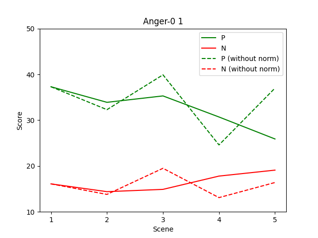
- During dinner, I share my perspective on a recent event that has been in the news. I outline my thoughts clearly to the others at the table.
- My parents listen to my point and acknowledge it with a quick response. Shortly after, they transition the topic of our discussion to something else.
- I see an opportunity to steer the conversation back to the original subject I brought up. I try to provide more details and clarify my earlier points.
- In response, my parents offer a casual remark minimizing the importance of the topic. They then continue to talk about the new subject they introduced.
- The dinner conversation moves on without revisiting my opinion in depth. After the discussion, we engage in the remaining planned activities for the evening.
Anger-0 2
If your classmate talks back to you when there's no reason. That there is no real reason to oppose.
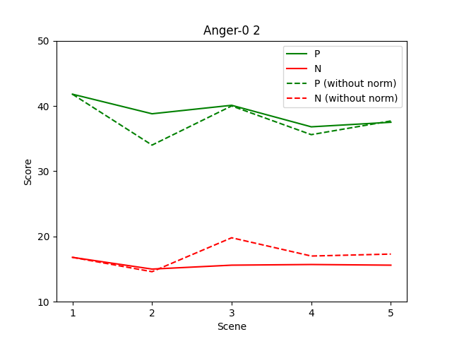
- In the midst of the class discussion, I contribute by sharing my perspective on the topic being debated.
- Following my contribution, a peer articulates a perspective that seems to diverge from the central theme of my initial statement.
- To prevent any potential confusion, I restate my original argument with added emphasis on the key elements to make my position clear.
- Despite my efforts to clarify, the same individual persists in offering viewpoints that do not appear to align with the refined explanation of my stance.
- As the discussion wraps up without reaching a clear consensus on the matter, we collectively shift our attention to a new subject as per the instructor's guidance.
Anger-0 3
If some older people like your parents are discussing a movieand you want to join in, and they say you wouldn't understand. Sometimes they say you have to understand. Some other times you're too young. It doesn't matter if you're young; you can understand anyway.
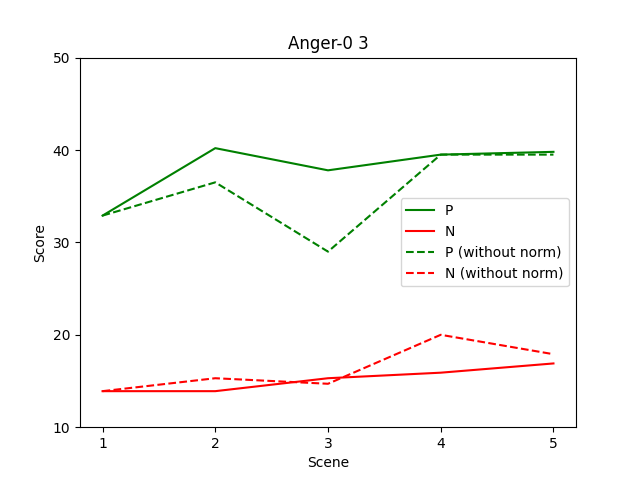
- While at home, I happen to catch snippets of a discussion my parents are having about a movie. The movie appears to have deep and intricate themes based on their conversation.
- Feeling intrigued by their exchange, I interject and express a wish to add my point of view to their dialogue about the movie.
- In response, my parents turn to me and explain that the movie contains layered and complex material, which might be challenging for me to fully understand.
- In some instances during our talks, my parents hint that my current age may not equip me with the necessary perspective to appreciate the full depth of the movie's themes.
- Regardless of the concerns about my age, I hold onto the belief that I am capable of understanding and interpreting the intricate subject matter of the movie.
Anger-0 4
When your classmate says the Earth is flat and they think is right, but you know it's wrong and they won't admit they're wrong. Their stubbornness, not wanting to confess to a mistake.
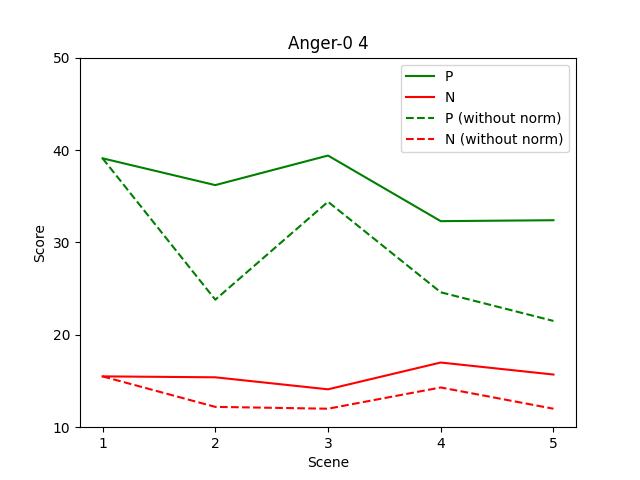
- The classroom is filled with desks and a chalkboard at the front. The teacher initiates a discussion on various scientific topics, including the shape of the Earth.
- During the discussion, a peer of mine presents their viewpoint, stating that they believe the Earth is flat. They speak with confidence and refer to this idea as a factual statement.
- In response, I refer to our textbooks and cite the scientific consensus, pointing out the evidence that supports the Earth's spherical shape. I share this information with the intent of contributing to the discussion.
- After presenting the evidence, the same classmate continues to assert their original claim. They do not engage with the evidence I have brought to their attention.
- The class period ends, and as the students pack up and leave the room, it is apparent that my classmate's viewpoint on the shape of the Earth remains the same.
Anger-0 5
When you know you're right, but the others say your view is wrongelse and you cannot prove you're right.
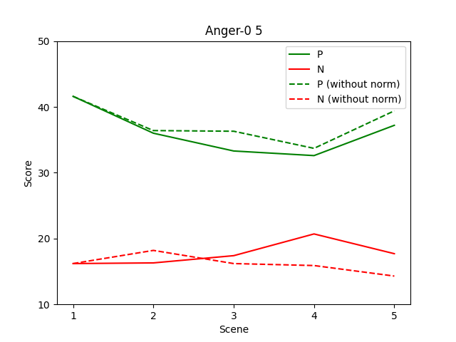
- During the team meeting, I present the details of my view, explaining the rationale behind my position based on certain data points.
- As I finish my explanation, the team members share their perspectives, pointing out that the information I've presented appears inconsistent with their understanding of the subject matter.
- In order to substantiate my viewpoint, I attempt to bring up the specific data on which my conclusions are based. However, I encounter difficulty in accessing the necessary documents at that time.
- After a discussion, the team concludes that it is best to move forward with the approach that aligns with the majority's view, citing the absence of the documents needed to corroborate my stance.
- Post-meeting, I dedicate time to locate and examine the pertinent data. Upon review, I find that the data indeed substantiates the view I initially presented during the meeting.
Anger-1 1
When your older brother has taken money from Mom's purse and you are blamed because you're the youngest one. They accuse you though you didn't take it.
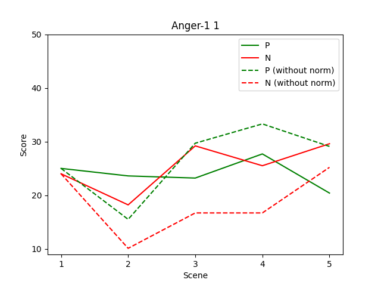
- I enter the room and see my older brother standing near Mom's purse. He looks around, then his hand moves into the purse, and when it comes out, he has money in his hand.
- Some time passes, and Mom approaches me with a question about the money she can't find in her purse. I answer her questions, stating that I have no knowledge about it.
- While responding to Mom's questions, I sense that she is not fully convinced by my answers. The fact that I am the youngest seems to factor into her reaction.
- Throughout the questioning, I am cognizant of the fact that my older brother is present. He remains silent and does not disclose any information about the incident.
- The decision is made that I will face consequences for the missing money. I acknowledge the decision, even though I am aware that the true nature of the event is not being addressed by my brother.
Anger-1 2
If your mother blames you for breaking a vase that you have not done.
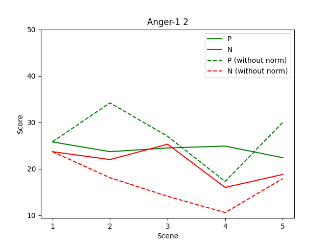
- I am seated in the living room, engaged in my own activities, when I hear the sound of shattering glass from the adjacent room.
- Shortly thereafter, my mother enters the living room, her gaze shifting from the broken vase fragments on the floor to me.
- She articulates her conclusion that I am the individual responsible for the vase's current state.
- In response, I communicate to her that I was not connected to the event that resulted in the vase breaking.
- Despite my explanation, my mother maintains her stance on my involvement and delegates to me the responsibility of collecting and disposing of the broken pieces.
Anger-1 3
When your mom has lost some money, she always puts the blame on you and thinks you took it. She always thinks you are the one to blame.
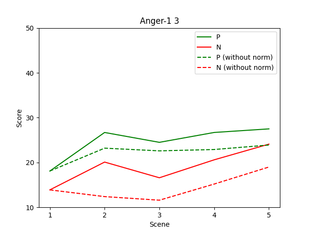
- I observe my mom pacing around the house, checking various places such as drawers and underneath cushions.
- My mom approaches me with a question, inquiring if I have come across any misplaced money recently.
- I respond to her query, informing her that I have neither seen nor taken any money.
- My mom resumes her search through the house, checking additional potential hiding spots and reiterating her question to me, implying that I might have information about the money's whereabouts.
- I notice that my mom is still engaged in her search for the missing money, and her actions and repeated questions suggest that she is considering me as a possible suspect in the matter.
Anger-1 4
When you're tired and have slept too little, and everybody just keeps nagging at you at home, you get put out and would rather have peace and quiet.
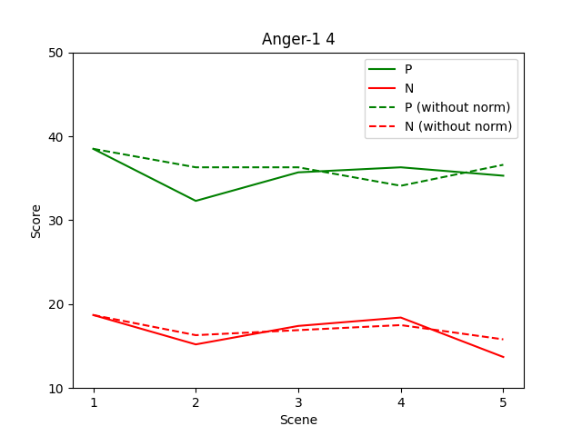
- After a shorter period of rest than usual, I open my eyes to the beginning of a new day.
- As I progress through my morning activities at home, I find myself engaged by various household members who initiate conversations that require my input or direct involvement.
- I notice that the more I try to continue with my daily tasks, the more frequent these conversational engagements become.
- I decide that in order to proceed with my activities undisturbed, I need to find a location that offers a reduction in these interactions.
- I move to a different part of the premises where there are fewer individuals present and the auditory environment is less disruptive, which provides a setting more conducive to solitude.
Anger-1 5
When your parents take their bad morning mood out on you, even though it's none of your business, you think that people who are in a bad temper don't necessarily have to let it come out on other people if it isn't necessary.
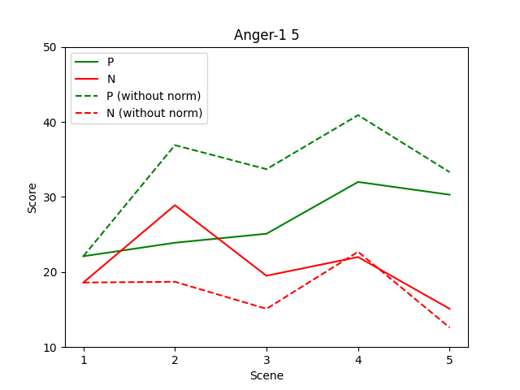
- In the morning, I see my parents having a discussion. Their facial expressions are strained and their conversation is audible throughout the house.
- Their voices carry a certain edge, and their speech is louder than it typically is during our morning routine.
- I find myself on the receiving end of comments from them that seem pointed, though I can't correlate them to any of my own actions.
- The thought crosses my mind that people can choose how to handle their internal states and this can affect their external reactions.
- I proceed to go about my usual morning activities, focusing on completing the tasks at hand without engaging in the earlier exchange.
Anger-2 1
When your classmates are bullied. You have been bullied yourself and know how it feels. You get angry because you cannot help being different, having glasses, or being oddly dressed.
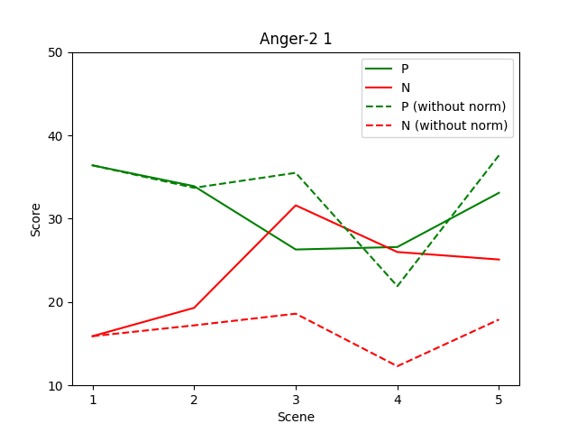
- During class, I notice a number of my classmates are involved in interactions with a group of students. These interactions occur within my field of vision.
- My mind brings up memories of past situations where I found myself in the center of similar interactions, which were centered around aspects such as the glasses I wore and the clothes I chose.
- I become aware of physiological changes such as an increase in my heart rate and my hands involuntarily forming into fists while I am observing these interactions.
- I deliberate on whether to step in and address the situation. Despite the consideration, I ultimately decide to stay where I am and continue to watch the events unfold.
- Upon reflection at a later time, I think about the day's occurrences and take note of my own responses to the behaviors I witnessed.
Anger-2 2
When older students physically bully a smaller classmate who is defenseless, it angers you.
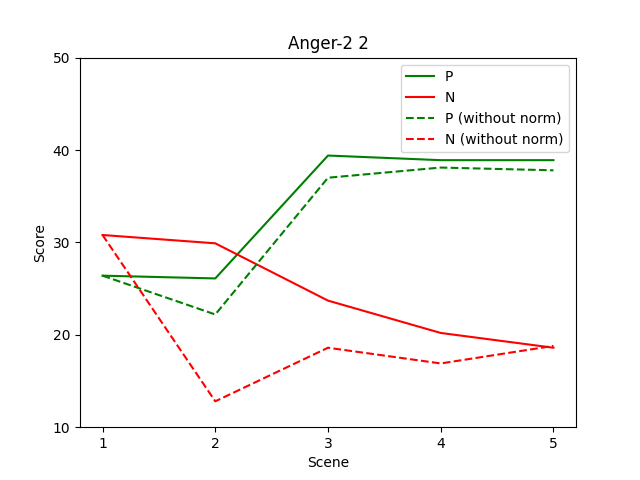
- During a regular school day, I see a group of older students surrounding a smaller classmate. It appears they are engaging in unwelcome physical contact with the smaller student who remains passive throughout the interaction.
- While observing the event, I notice the smaller classmate does not respond with any defensive or aggressive movements to counteract the older students' actions.
- Deciding to respond to what I'm witnessing, I walk over to the location where the interaction between the older students and the smaller classmate is taking place.
- Upon arriving at the scene, I initiate a dialogue with both the older students and the smaller classmate, addressing each party in the context of their current activities.
- After the intervention, I proceed to inform the school authorities by detailing the incident and ensuring that all relevant information is communicated.
Anger-2 3
You get angry when your two brothers start a fight with you, particularly when your parents are not around. When they hit you in the belly, causing pain that makes you mad and retaliate, they respond by hitting you even harder.

- I am spending time in the living room with my two brothers when a disagreement begins.
- As we exchange words, the situation develops into a physical one, and I receive a hit in the abdomen.
- Following the hit, I instinctively react with a physical response directed at both of my brothers.
- Upon my reaction, my brothers increase the intensity of their physical actions in the dispute.
- The physical exchange between us persists, and there are no parents present to intervene.
Anger-2 4
When your pal has a book she won't show you. Because you think she has written something about you.
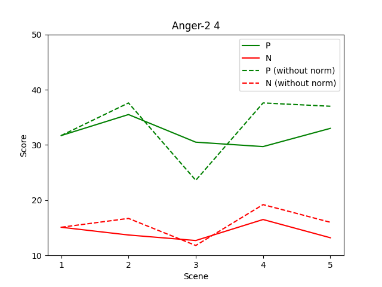
- During a gathering, I observe that my friend has a book in her possession which she frequently consults and writes in.
- With a sense of curiosity, I inquire with my friend about the contents of the book and express an interest in viewing it.
- My friend responds to my inquiry by stating that the book contains personal entries and declines to share its contents with me.
- Following her response, I contemplate the possibility that the book may contain entries that pertain to me.
- Despite my earlier curiosity, I decide to honor my friend's wish for privacy and do not press the matter further, opting instead to carry on with the activities of the day.
Anger-2 5
You get angry when one of the girls in your class is teasing you. It's not fun to get mad, you think.
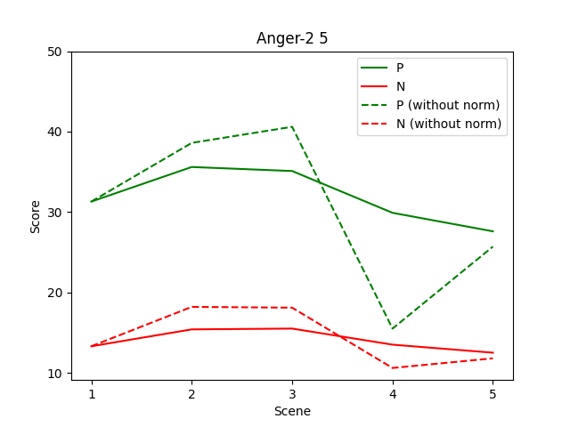
- I am seated at my desk in the classroom when a girl in my class begins to speak to me. Her words are directed towards me and consist of various remarks.
- I hear what the girl says and choose to reply. My response is a statement aimed at addressing the situation directly with her.
- Our conversation continues as we exchange words. The discussion is centered around the remarks she made, and we both contribute to the dialogue.
- After a period of back and forth, I make a decision to cease my participation in the conversation. I choose to remain silent for the duration of the class without further engagement.
- Once the class concludes, I gather my belongings and exit the room. There is no additional contact or communication with the girl as I leave.
Anger-3 1
When you're tired and busy with your homework and things go wrong, you get mad. Because you're tired and you think everything goes wrong.
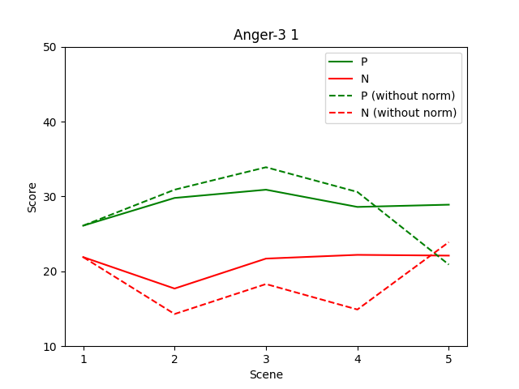
- I glance at the clock and notice the time indicating that it is later than I had planned. The homework I need to complete remains unfinished on my desk.
- I sit down at my workspace and proceed to open my textbook to the section required for the assignment. I observe that the surface of my desk is crowded with various papers and other books.
- I begin to tackle the homework problems and find that certain concepts in the material are difficult to grasp, which complicates my progress on the assignment.
- Once the assignment is finished, I attempt to print the document. However, upon initiating the print command, the printer remains inactive. I examine the printer and discover that it has run out of paper.
- Deciding to take a short break, I prepare a cup of coffee. Upon returning to my desk with the coffee, I accidentally spill it onto my textbook. The coffee quickly soaks into the pages, causing the ink to run and the text to become obscured.
Anger-3 2
When everything goes wrong. You're alone, there is no one else to blame. Something breaks down, and you don't have a clean blouse to put on. You get mad at yourself for not having washed that blouse, etc. It's your laziness and dullness you get mad at. If someone is there with you, for example, your mom, you will blame your laziness on her.
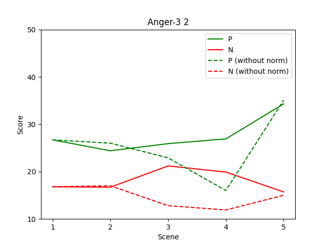
- Upon attempting to use a piece of equipment that is part of my regular routine, I discover that it is not in working order.
- I open my wardrobe to find a specific clean blouse for the day's activities. However, I find that the blouse I intend to wear is not in a clean state.
- I realize that I had not conducted laundry duties recently, which would have included washing the blouse I intended to wear.
- My mother enters the room. I contemplate the idea of discussing the absence of clean clothes and whether it might be connected to anything she may or may not have done.
- Choosing to set aside the issue of the blouse, I select a different article of clothing to wear. Subsequently, I turn my focus to the malfunctioning equipment and begin to consider what steps I might take to rectify the situation.
Anger-3 3
When local tycoons or people in high positions abuse power. It is not the money that makes you mad but the fact that such idiots can have such a high position.
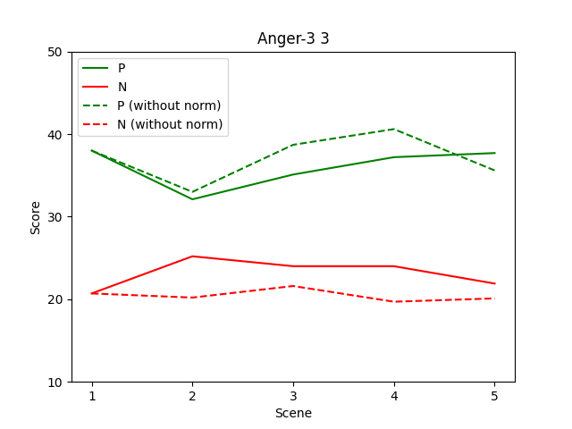
- On multiple occasions, I observe individuals with considerable wealth or high-ranking positions as they interact in various professional and social contexts. It becomes apparent that some of these individuals occasionally engage in actions that might not align with widely accepted ethical standards.
- During meetings and public events, I notice specific decisions made by these individuals. These decisions, at times, appear to primarily serve their personal or professional interests, with less apparent regard for the collective benefit of the community or the official objectives of their organizations.
- In the course of these observations, I become aware of the varied reactions from people in my surroundings. Some individuals voice their concerns regarding the equity and integrity of the decisions being made, while others display a range of attitudes from indifference to support.
- Motivated by a need to understand the situation better, I undertake a series of research activities. This research reveals that the behaviors I've noted are part of a broader pattern and not merely isolated occurrences.
- I spend time contemplating the structures and mechanisms that permit such a concentration of power and the potential it holds for misuse. My thoughts extend to the broader implications these practices may have on society and the principles of governance.
Anger-3 4
When you wake up and put on your sweater, but you get it wrong. That you get your sweater all wrong.
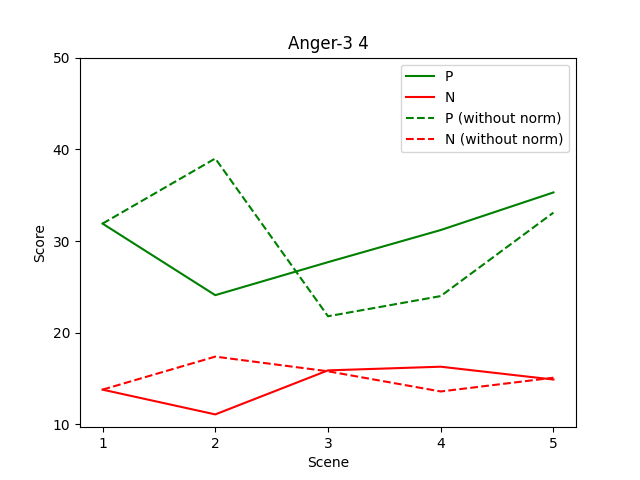
- I get out of bed and begin the process of getting ready. I open my closet and choose a sweater to wear.
- I slide my arms through the sleeves of the sweater and pull it towards my head to wear it.
- After the sweater is on, I feel the fit is awkward and the fabric sits unevenly on me.
- I take a closer look at the sweater and notice that the tag is on the front. It dawns on me that the sweater has been put on inside out and reversed.
- I carefully take off the sweater, paying attention to its orientation. I then redress, making sure the sweater is the right side out and facing the correct direction.
Anger-3 5
When the alarm has rung in the morning, but you stay in bed and fall asleep again. That you don't have time to get ready in peace and quiet but have to fling your clothes on before leaving.
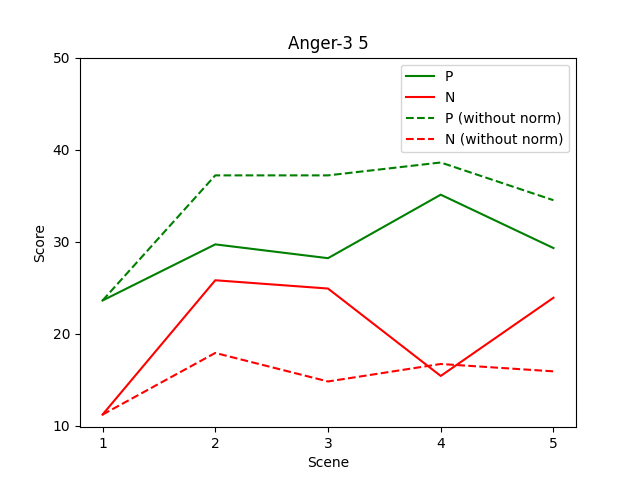
- The alarm begins to emit sound, signaling the start of a new day. I reach over and deactivate the alarm. The comfort of the bed leads me to a state of rest once again.
- Upon awakening, my attention is drawn to the clock. It indicates the progression of time, which suggests a condensed timeframe for today's preparations.
- Rising from the bed with haste, I hastily select clothing and attire myself. My actions are expedited, bypassing customary morning activities.
- I gather items of importance for the day's requirements. Exiting my place of residence, I initiate the journey towards my obligations.
- Ensuring the security of my dwelling, I engage the lock and move forward, having allocated a diminished duration for morning preparations.
Anger-4 1
Someone is driving very close to your rear bumper.
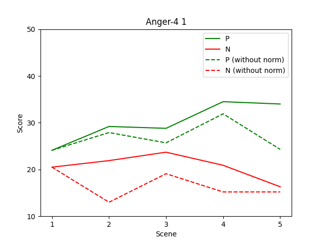
- As I drive, I observe in the rearview mirror that there is a vehicle that appears to be maintaining a consistent short distance from the back of my car.
- I glance down at the speedometer to verify my speed and ascertain that it is within the legal limit.
- Despite the variations in traffic flow, I note that the vehicle behind me persists in keeping the same close distance.
- When the opportunity presents itself, and it is safe to do so, I make the decision to switch to an adjacent lane, providing the following vehicle with the option to overtake.
- Post lane change, I watch through the mirror as the vehicle that was previously behind me increases its speed and continues to travel down the road.
Anger-4 2
Someone cuts in right in front of you on the motorway.
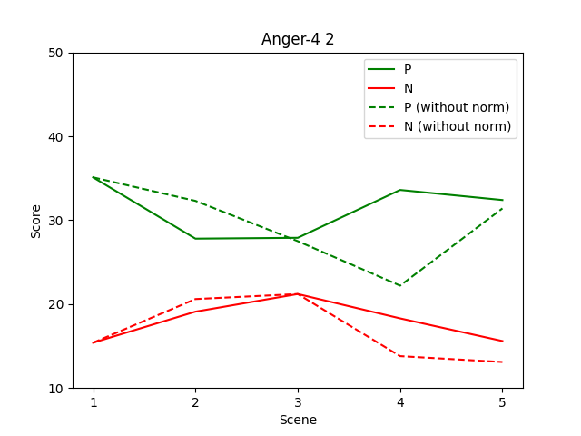
- I am traveling on the motorway, adhering to the speed regulations.
- Another vehicle comes into view, approaching from behind at an increased velocity.
- The driver of the other vehicle positions their car ahead of mine, which results in a smaller space between our vehicles than before.
- In response, I ease off the accelerator, allowing my vehicle to slow down and recreate a safer distance from the car that is now ahead.
- With the adjusted spacing, I proceed along the motorway, ensuring a consistent and secure gap is maintained behind the vehicle that moved in front.
Anger-4 3
Someone cuts in and takes the parking spot you have been waiting for.
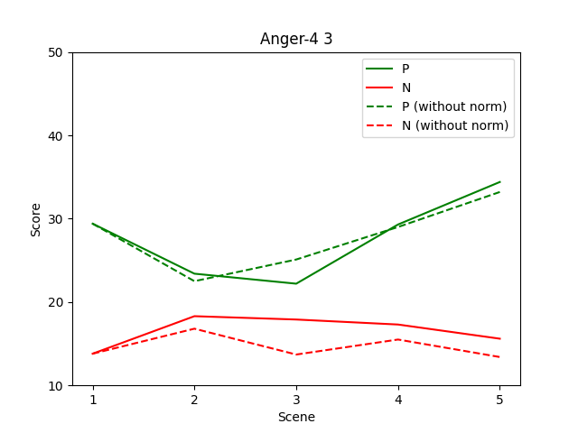
- I turn into the parking lot and locate an available parking spot. I adjust the position of my vehicle to align with the spot for parking.
- As I prepare to move into the parking spot, another vehicle enters the parking lot and moves into the space ahead of my vehicle.
- I stop my vehicle briefly and notice that the other vehicle has completed parking in the spot I had identified.
- I proceed to drive through the parking lot, continuing to look for an available space to park.
- After searching the lot, I find another parking spot that is unoccupied. I steer my vehicle into the spot and park there.
Anger-4 4
Someone backs out right in front of you without looking.
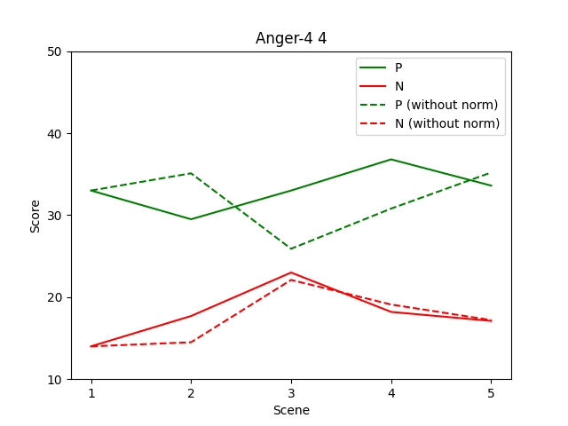
- I am operating my vehicle at a consistent pace, ensuring compliance with the established traffic regulations.
- My attention is drawn to a stationary automobile positioned on the curb to my right.
- The stationary automobile suddenly engages in a reverse action, encroaching onto the thoroughfare without any signaling.
- In response, I engage the braking system of my car to create a safe distance between my vehicle and the other, thus averting potential contact.
- Once the other vehicle ceases its backward trajectory, I navigate my car around it and resume my journey along the road.
Anger-4 5
Someone coming towards you does not dim their headlights at night.
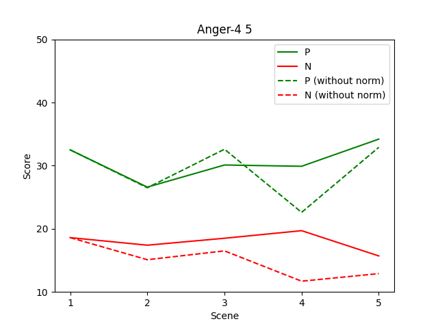
- The time on the car's clock shows it's late as I steer my vehicle along a two-lane road.
- In my field of vision, I notice a vehicle approaching from the opposite direction; its headlights are distinctly bright.
- With steady hands on the wheel, I keep my car moving forward, and the gap between the oncoming vehicle and myself becomes smaller.
- As the vehicle moves past my car, there is no change in the intensity of its headlights; they remain on high beam.
- Following the encounter, I check my rearview mirror, then refocus on the road ahead, maintaining a consistent speed as I proceed with my journey.
Anxiety-0 1
You do not have control over your exam score.
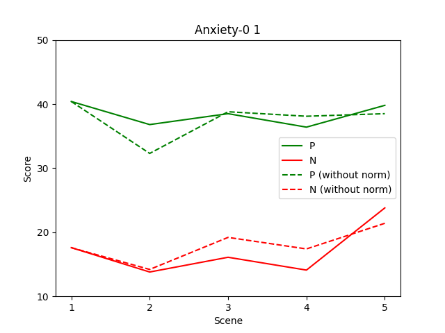
- I finish marking the last answer on the exam and take a moment to scan through my responses to ensure all questions are addressed.
- I proceed to the front of the room, hand my exam to the instructor, and make my way out of the examination hall.
- I navigate across the campus, mulling over the various exam questions I encountered, considering their structure and content.
- I arrive at my dorm room and decide to engage in a range of activities to pass the time and switch my focus.
- Several days pass, and I notice a new email in my inbox indicating that the exam results have been posted and are now accessible.
Anxiety-0 2
You cannot change the outcome of your job interview.
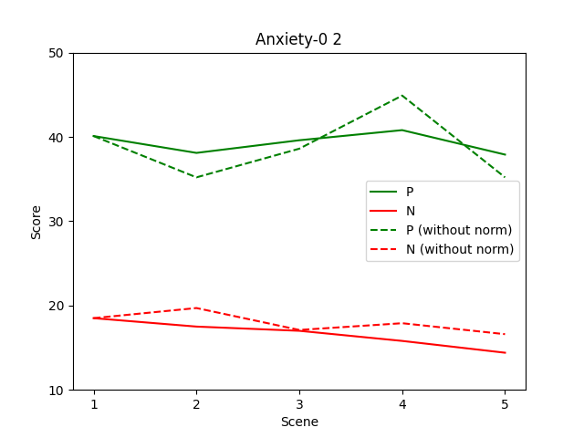
- In preparation for the job interview, I spend time researching the company's background and go over my answers to typical interview questions to ensure I am well-prepared.
- I arrive at the company's office and present myself at the reception desk. I am then directed to wait in the reception area until it is time for my interview session.
- When summoned, I walk into the interview room and greet each of the interviewers with a handshake before being instructed to sit down in preparation for the interview to start.
- Throughout the interview, I listen to the questions posed by the interviewers and provide detailed responses that highlight my relevant experience and skills for the position I am applying for.
- After the interview concludes, I stand up, express gratitude to the interviewers for the opportunity to discuss the job, and then leave the room to make my way out of the company's office.
Anxiety-0 3
You cannot cope with the loss of a loved one.
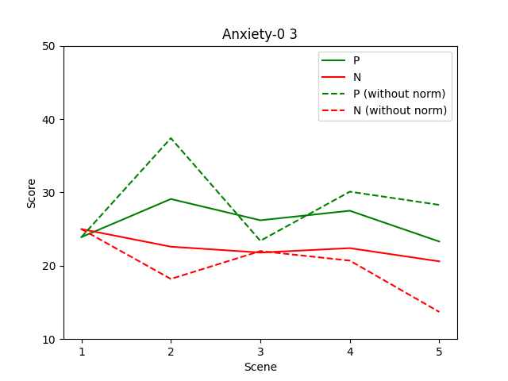
- I answer the phone and listen to the information being provided to me. The individual on the other end informs me of the passing of a loved one.
- I arrive at the location where the memorial service is being held. I observe individuals gathering and various people speaking at the front.
- I walk into the home that I once shared with the loved one. I take note of the stillness of the space where they used to be.
- I begin to carry out my daily activities, but I am reminded of the loved one's absence in the midst of these routines.
- I am lying in bed, the room is quiet, and I reflect on the alterations to my daily life.
Anxiety-0 4
You do not know what to do when facing a difficult financial situation.
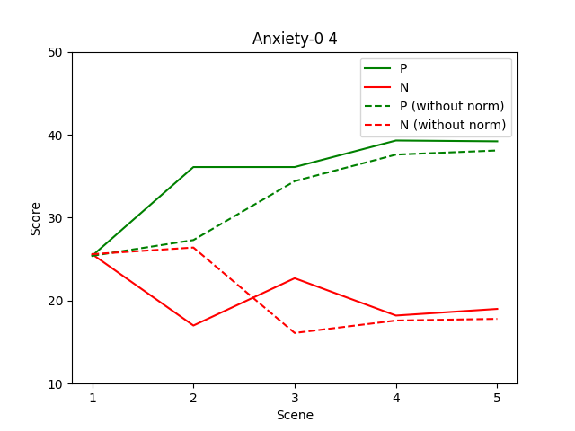
- I log into my online banking platform and review the account summary. The current balance displayed is lower than what I need for the expenses I have planned.
- I take out a piece of paper and begin to list down all my financial commitments for the upcoming month, including utility bills, loan repayments, and other dues.
- I spend time on the internet looking up different ways to manage financial shortfalls. This includes reading about loan options, ways to extend credit lines, and methods to improve budgeting.
- I make phone calls and send emails to various financial advisors and banking institutions, asking for advice and discussing potential solutions to manage my financial situation.
- After gathering information, I sit down and draft a detailed plan. This plan outlines a new budget, identifies opportunities for additional income, and sets a schedule to mitigate the current deficit in my bank account.
Anxiety-0 5
You are unprepared for the unexpected changes in your travel plans.
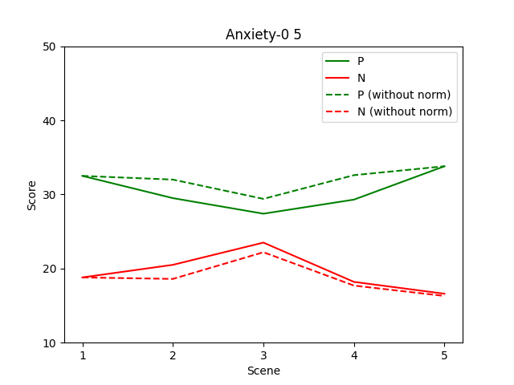
- On reviewing my itinerary, I notice a mismatch in the departure times listed and the current flight schedule displayed on my app.
- At the departure terminal, my attention is drawn to the flight information board, which indicates a destination that I was not expecting to see.
- I make my way to the airline information desk and inquire about my original flight. The staff confirms that the flight's route has been changed, and it is now heading to an alternate city.
- The airline staff go over the new arrangements with me. They explain that there will be a connecting flight that I can take, which is scheduled to leave later in the day.
- Following the updated plan, I locate the gate assigned to the connecting flight and take a seat in the waiting area, keeping an ear out for the boarding call.
Anxiety-1 1
You are fearful of the upcoming presentation you have to deliver.
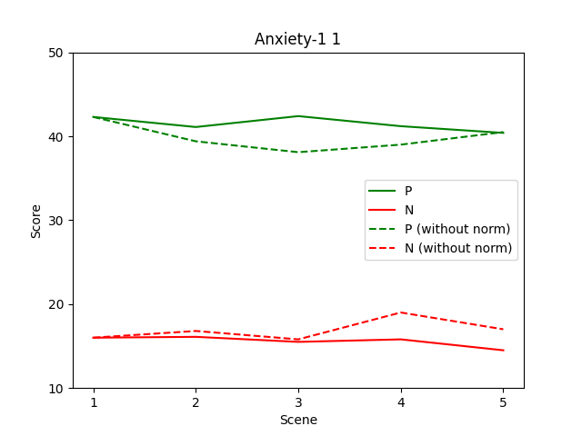
- I look over the presentation materials thoroughly, checking each piece of data for accuracy and confirming that the slides are organized in the correct sequence.
- I find an unoccupied room where I can rehearse my speech, monitoring the time spent on each part to ensure it fits within the planned timeframe.
- I arrive at the venue with time to spare, arrange the equipment I will be using, and conduct tests on the audio-visual setup to ensure it operates correctly.
- I position myself at the podium as the room begins to fill, glancing over my notes one last time in anticipation of the presentation's start time.
- I commence the presentation, advancing through the slides methodically and responding to questions from the audience when the Q&A period arrives.
Anxiety-1 2
You are overwhelmed by the workload and deadlines at your job.
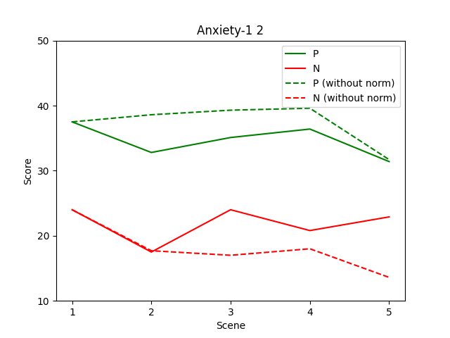
- The current day presents itself on the calendar, revealing a clustering of project deadlines that require my attention.
- Positioned at my desk, I undertake an examination of the task list, noting its extensive nature and the work that lies ahead.
- Throughout the day, I partake in a series of meetings during which the list of responsibilities grows as new assignments are distributed to me.
- With the departure of standard office hours, I persist in my efforts at the desk, addressing the tasks that demand completion.
- I power down my computer in the later hours of the evening and exit the office, cognizant of the fact that this pattern of work is set to continue on the following day.
Anxiety-1 3
You must succeed in completing your project on time.
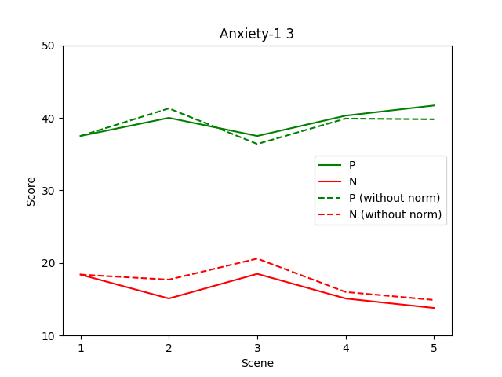
- In the morning, I review the timeline set for the project and take note of the deadline that is approaching.
- I proceed to organize my day by assigning each hour to specific tasks that are outstanding on the project.
- During the execution of the tasks, I come across a complication that was not anticipated and it demands extra time to address.
- I reassess the schedule for the tasks, make necessary adjustments, and continue working according to the updated list of priorities.
- Upon completion of the last part of the project, I proceed to submit the project to the intended recipient within the time frame that was originally set.
Anxiety-1 4
You must perform well during the sports competition.
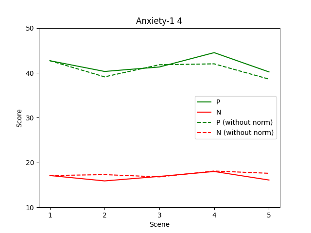
- I check the list of items I will need for the competition and gather my equipment. I also look over the competition schedule carefully to make sure I know the timing of my events.
- Upon reaching the competition venue, I proceed to the registration desk. I provide the necessary documentation, receive my participant number, and confirm my events on the provided schedule.
- I find an open area to begin my warm-up. I perform a series of stretches and go through some of the key moves that I will need during the competition.
- When my first event is called, I step onto the competition area and concentrate on each movement, making sure to follow the techniques I have rehearsed.
- After completing my performance, I return to the seating area for competitors. I watch others as they perform, while waiting for the judges to announce the scores. I also mentally prepare for the next events on the schedule.
Anxiety-1 5
You knew that you would have to make a difficult decision at some point.
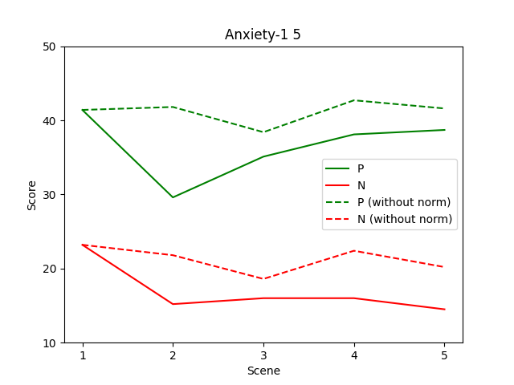
- I recognize the necessity of making a choice.
- I collect data and information pertinent to the situation at hand.
- I analyze the potential consequences associated with every alternative available.
- I engage in a process of evaluation, considering the advantages and disadvantages of each possibility.
- I reach a conclusion, select an option, and initiate the steps to implement the decision.
Anxiety-2 1
You have control over how you react to criticism from others.
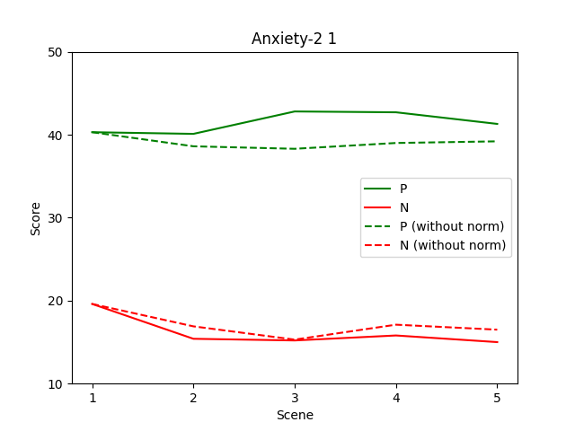
- I open my email and find a message containing feedback on my project. The feedback lists various aspects that require enhancement.
- I sit down to carefully read through the comments. I take notes to pinpoint the exact elements of the project that were highlighted for improvement.
- I begin researching different techniques and strategies that could be applied to refine the project. I focus on finding solutions that are relevant to the criticisms received.
- I start the revision process of the project. Methodically, I integrate the feedback into the work, making the necessary modifications to each part as suggested.
- After completing the adjustments, I proceed to resubmit the project. I ensure that all changes are included and send it off for a subsequent round of evaluation.
Anxiety-2 2
You believe you can change the dynamics of a strained relationship.
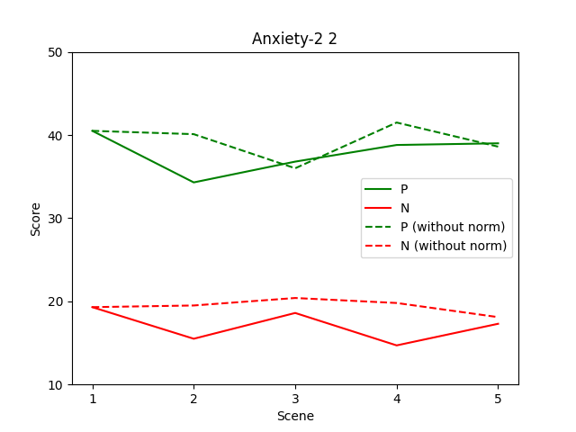
- I choose to start a dialogue to discuss previous discrepancies.
- I set a meeting at a location that is known and impartial to both individuals.
- I share my viewpoint regarding the series of events that contributed to the tension between us.
- I pay attention to the other person as they relay their version of the events and their standpoint.
- I suggest various options and middle grounds that might better the interaction between us.
Anxiety-2 3
You can make something productive out of your free time.
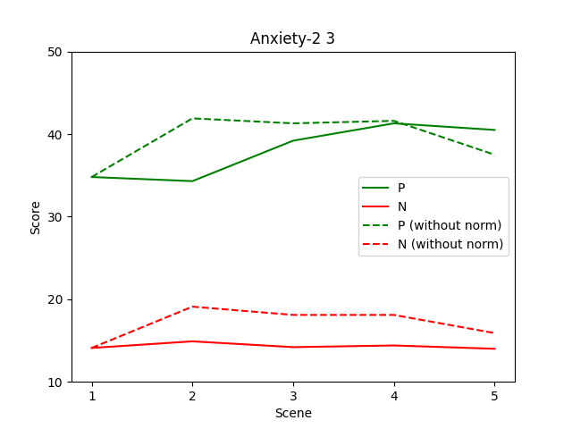
- I look at my schedule and notice a block of free time has become available.
- I review a list of tasks and projects, evaluating which ones could be addressed during this time.
- After considering my options, I select a particular task that seems appropriate for the duration of this free period.
- I collect all the items and information needed to start working on the selected task.
- I use the available time to work methodically on the task, completing various steps until the period of free time has ended.
Anxiety-2 4
You are not sure if you will get a promotion at work.
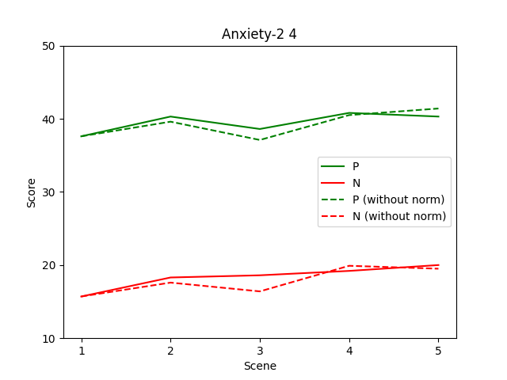
- I finish the last of my assigned work tasks and make a note of the time for my upcoming meeting with my supervisor, which is to cover discussions on career progress and potential promotions within the company.
- While preparing for the meeting, I check my email inbox and come across an email from the company's management. The email contains details about the schedule for upcoming promotion announcements.
- As the time for my meeting draws closer, I notice several of my colleagues engaging in conversation about their own meetings. They share details about the outcomes and feedback they received regarding their career advancements.
- The time for my meeting arrives, and I make my way to the designated meeting room. I enter the room and sit down across from my supervisor, ready to discuss the details of my work performance and the prospects of a potential promotion.
- After the meeting concludes, I exit the room with an understanding of my current career standing as conveyed by my supervisor, as well as the definitive decision regarding the promotion I was being considered for.
Anxiety-2 5
You do not want to face the confrontation with your neighbor.
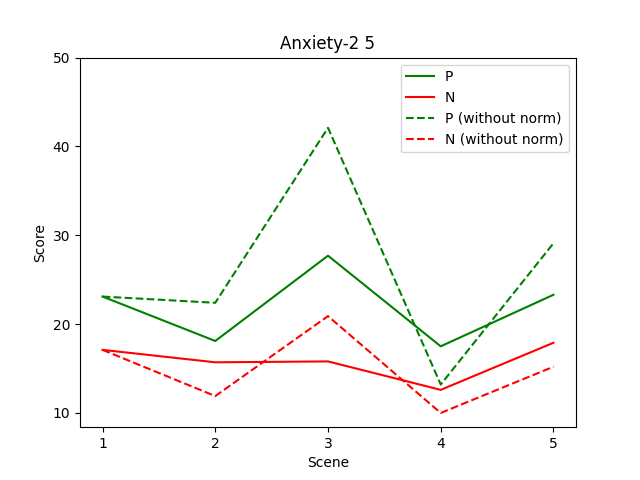
- The sound from the adjacent apartment reaches my attention due to its consistent volume over an extended period.
- I deliberate on the idea of addressing the noise by speaking with my neighbor but ultimately decide to remain in my apartment.
- To mitigate the intrusion of noise, I equip myself with headphones.
- As time progresses, a series of knocks at my door occur. I choose not to respond.
- The remainder of the evening is spent within my apartment, where the noise from next door is intermittently noticeable.
Anxiety-3 1
You are not being rational when jumping to conclusions.
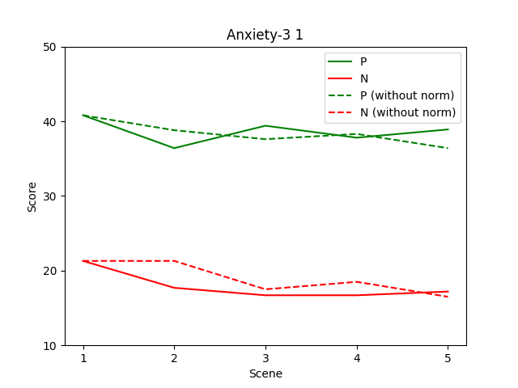
- Upon reviewing recent reports, I come across details that indicate a discrepancy that could lead to a potential issue.
- Given the limited information at hand, I deduce that this discrepancy is likely to result in a problem. I do not have further data to confirm or deny this.
- Based on my deduction, I proceed to make a series of decisions aimed at preempting the expected problem, altering plans and protocols accordingly.
- Subsequent to my actions, I am presented with new findings that do not align with my earlier assessment. These findings challenge the likelihood of the problem occurring.
- I take the new data into account and perform a thorough analysis. I now understand that the situation may not unfold as previously anticipated, and the initial concern may not materialize.
Anxiety-3 2
You hope time passes by faster during a tedious task.
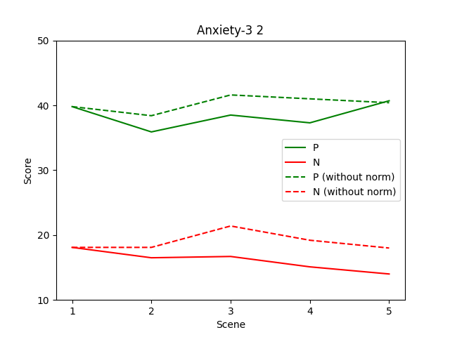
- Upon beginning the task at hand, I casually glance at the clock to log the current time.
- As I delve deeper into the task, I intermittently check the clock, noting how time is incrementally progressing.
- The task is underway and I'm aware of the sun's transition across the sky through the window, a natural marker of the hours that have elapsed.
- Having achieved a considerable milestone in the task, I look at the clock again to see how much time has passed since I started.
- With the task now complete, I cast a final look at the clock, confirming the alignment of the completion time with my initial expectations.
Anxiety-3 3
You are not sure if you will get a promotion at work.
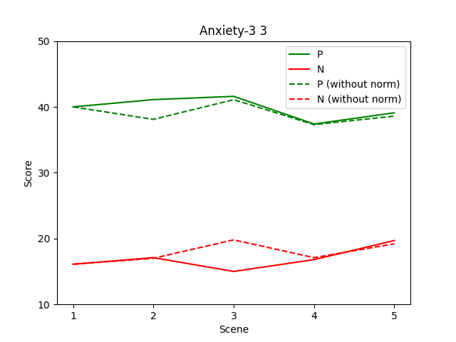
- I sit at my desk and examine the work that I've completed over the last twelve months. I make a list of what I have achieved and identify the skills I have worked to improve.
- I enter the conference room for a scheduled meeting with my supervisor. We engage in a discussion about the promotion cycle and go over the requirements needed for advancement.
- Post-meeting, I take time to reflect on the input given by my supervisor. I compare the specifics of the criteria for promotion to the notes from my self-evaluation.
- During the course of the day, I observe the behavior of my coworkers. I notice a number of them are actively preparing their cases for promotion, while a few do not show signs of concern or interest in the process.
- I find myself in a period of waiting after having ensured that all my responsibilities and necessary preparations for the promotion consideration have been met, as the company prepares to make its official announcement.
Anxiety-3 4
You can have a favorable outcome in your job application.
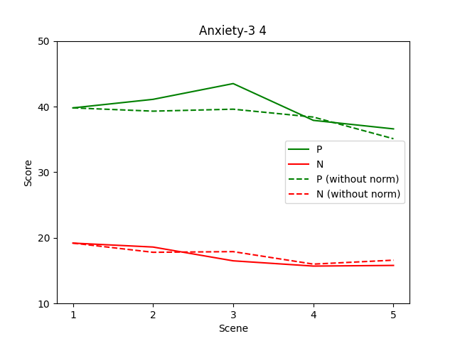
- Upon receiving the email notification, I open it to confirm the date and time of the scheduled job interview for the position I have applied for.
- I initiate a search on the internet to gather information about the company and the profiles of the individuals who will be conducting the interview to adequately prepare for the questions that might be asked.
- During the job interview, I engage in conversation with the interviewers, responding to their queries and elaborating on my skills, qualifications, and work history.
- Following the conclusion of the interview, I compose and dispatch a courteous email to the interviewers, expressing appreciation for the chance to interview with them.
- I later receive an email from the company that acknowledges my follow-up and indicates that they will notify me of their hiring decision within the timeframe they have outlined.
Anxiety-3 5
When there is a change in routine: Visualize waking up to find out that your usual daily routine has been completely disrupted. Perhaps your usual mode of transportation is unavailable, or there is a sudden change in your work schedule or school timetable. The unexpected alteration forces you to adapt and make adjustments on the spot, leading to a sense of disorientation and the need to quickly readjust your plans.
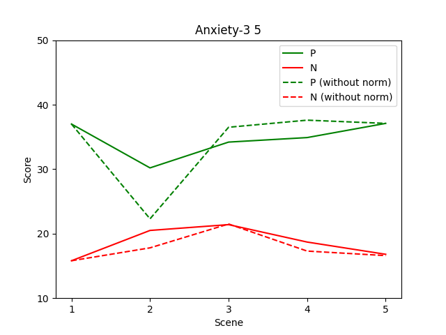
- My alarm clock sounds at the standard time I have set, which signals the start of my day as per my normal routine.
- I pick up my phone to check for updates and find a notification indicating that the service I typically use for commuting is not available today.
- I open my work calendar to review my appointments and tasks, only to notice that there have been substantial updates to my agenda, requiring my immediate attention.
- Considering the situation, I evaluate the different transportation options at my disposal and decide on an alternative way to travel.
- With the alternative transportation chosen, I proceed to reorganize the sequence and timing of my planned activities to fit with the new transportation arrangement and the updated work commitments.
Depression-0 1
You put in countless hours of preparation, pouring your heart and soul into pursuing your dream. The moment of truth arrives, and as you anxiously wait for the outcome, the news hits you like a tidal wave your expectations shattered, your vision crumbling.
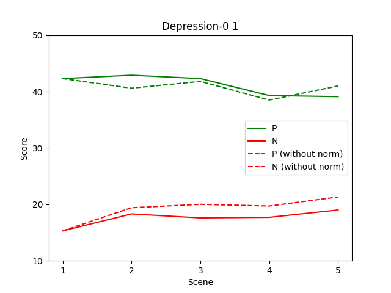
- Time is spent in thorough preparation, with attention to detail in anticipation of a goal I aim to achieve. Hours pass as I work diligently, aligning every action towards the desired end.
- As the pivotal moment draws near, I continue with my tasks, aware of the effort that has been invested up until now. Each step is calculated, bringing me closer to the anticipated event.
- The moment arrives for me to receive the pertinent information. I pause my activities to attend to the update, which will inform me of the progress made in relation to my objective.
- Upon reviewing the information provided, it becomes apparent that the outcome deviates from what was previously anticipated. The variables and calculations that were once considered are now revisited.
- In light of the new information, I take time to assess the situation. My initial plans are held up against this recent development, and I consider the necessary adjustments that will need to be made moving forward.
Depression-0 2
As you watch the confident smiles of your peers, you slowly realize that your name is not among the list of successful candidates for the dream job you've been striving for. Your heart sinks with each congratulatory message they receive, as you're left alone to face the overwhelming weight of unfulfilled expectations, your aspirations slipping further from your grasp.
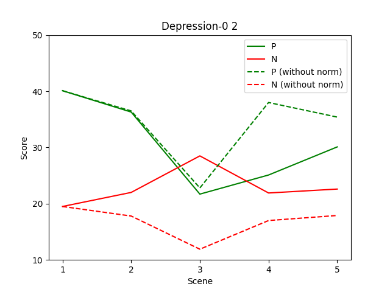
- I enter the room where the bulletin board is positioned, displaying the list of successful candidates.
- I move closer to the board and begin to read through the names, looking for my own amidst those of my peers.
- After reviewing the list thoroughly, it becomes apparent that my name is absent.
- While still near the board, I notice other individuals engaging with their acquaintances who offer them words and gestures.
- I decide to exit the building, contemplating the necessity of formulating a new plan for the path ahead.
Depression-0 3
As you pour countless hours of effort into achieving your long-awaited dream, the moment of truth arrives. With trembling anticipation, you eagerly await the results, hoping for success. However, as the news reaches your ears, a profound silence engulfs your heart, and the weight of disappointment crushes your spirit, leaving you questioning your worth and capabilities.
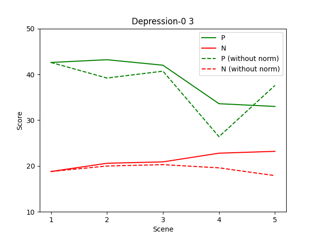
- I allocate several hours to the task of preparing and laboring towards the goal that I have set for myself.
- As the designated time approaches, I find myself in a state of alertness, awaiting the outcome of the work I have invested.
- I am presented with information that conveys the results of my endeavors.
- The information reveals that my efforts have not culminated in the realization of the objective I had aspired to.
- I engage in a period of introspection, mulling over the results and what they mean for my understanding of my own capabilities and identity.
Depression-0 4
You stand in the dimly lit room, surrounded by crumpled papers and discarded dreams. The weight of missed opportunities and shattered ambitions presses upon your chest, suffocating the flickering flame of hope within. A haunting silence lingers, echoing the whispers of doubt that seep into your weary soul, leaving you trapped in a suffocating cocoon of unfulfilled potential.
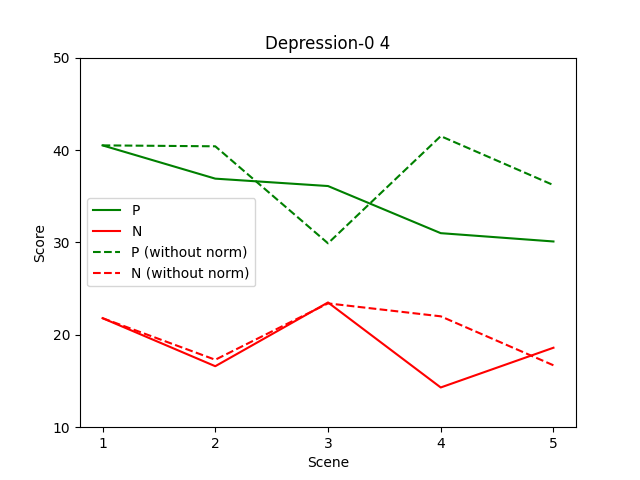
- The room's lighting is low, casting shadows across the floor where papers are scattered.
- Looking around, I see an array of objects and materials indicating a variety of projects and tasks that appear to have been in progress.
- A noticeable pressure develops on my chest, which constrains my deep breathing.
- Silence pervades the space, leaving me in solitude to reflect.
- I stand motionless, considering the state of the environment and my own place in it.
Depression-0 5
As you scroll through social media, you see your peers celebrating their achievements, showcasing their success in the very area where you fell short. Doubts creep in, whispering that you're not good enough, fueling the sinking feeling in your chest. Each passing day, the weight of your unmet goal grows heavier, casting a shadow on your dreams and leaving you questioning your worth.
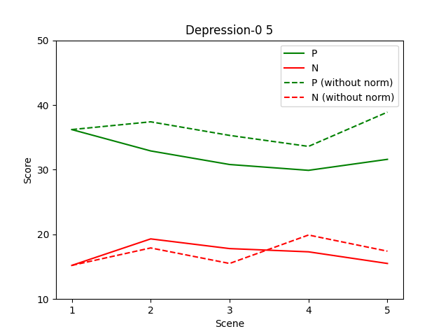
- I unlock my phone and launch a social media application. On the main feed, I see multiple posts where individuals display their accomplishments within a particular domain.
- While scrolling, I become aware of a correlation between the field in which these individuals are showcasing success and an area where my own efforts had led to a different result.
- As I continue to interact with the platform, I observe a consistent stream of content that focuses on personal and professional milestones achieved by others.
- With further use of the application, the instances of encountering a contrast between the successful outcomes shared by others and my personal history in a similar context increase in frequency.
- I dedicate a period to contemplate my objectives and review the extent of advancement I have achieved in my own pursuits.
Depression-1 1
As you stood by their bedside, tears streaming down your face, you held their hand tightly, feeling the warmth slowly fade away. The room grew silent, the air heavy with grief as their eyes closed for the last time, leaving behind an unbearable emptiness in your heart. Memories of laughter and love flooded your mind, reminding you of the profound loss that now engulfed your world.
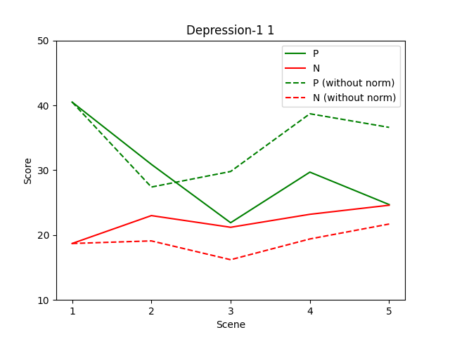
- I was standing by the bedside, taking note of the patient's vital signs which were shown on the monitoring equipment.
- I was holding the patient's hand, observing a gradual reduction in temperature and a diminishing level of responsiveness.
- The sounds in the room began to quiet down, and the patient's eyes stayed shut.
- I stayed beside the patient, my mind involuntarily recounting various experiences shared with them.
- The room's atmosphere shifted as the patient's active participation ceased.
Depression-1 2
As you stand in the dimly lit room, a heavy silence settles over you. The air feels suffocating, filled with remnants of memories that once brought joy. The photograph on the table captures the vibrant smile of your beloved grandmother, now forever frozen in time, reminding you of the void that her absence has created in your life.
- I find myself standing in a room where the light is dim and the sound level is minimal.
- The atmosphere of the room feels thick and unmoving.
- On the table, there is a photograph that captures my grandmother with a smile.
- I look closer at the photograph, acknowledging the fact that my grandmother has passed away.
- I remain in the room, which contains various objects that bring to mind my grandmother's existence.
Depression-1 3
As you stand by the hospital bed, holding the frail hand of your beloved grandmother, memories of her warm smile and loving advice flood your mind. You watch as her heartbeat monitor slows to a steady tone, and her presence slips away, leaving a void that seems impossible to fill. The weight of loss settles upon your chest, as you realize you'll never get to hear her laughter or feel her comforting embrace again.
- I am next to my grandmother's hospital bed, and my hand is in contact with hers.
- Memories of past experiences with her, such as her facial expressions and suggestions she gave, come to mind.
- My eyes are drawn to the heartbeat monitor, and I note the fluctuations in its readings.
- I register a change in the environment when there is a halt in the rhythmic sounds of her breathing.
- I recognize the permanence of the situation, understanding that we will not engage in future exchanges.
Depression-1 4
As you walk into your grandfather's room, the once familiar scent of his cologne now lingers in the air, mingling with the overwhelming silence. The empty chair by the fireplace serves as a painful reminder of the lively conversations and heartfelt laughter that once filled the room, leaving you feeling a profound sense of loss and longing for the warmth of his presence.
- Upon entering my grandfather's room, I detect the familiar scent of his cologne that lingers in the air.
- The room is quiet, and my attention is drawn to the vacant chair situated beside the fireplace.
- I reflect on past events that occurred within these walls, bringing to mind the various discussions and moments shared here.
- I become cognizant of my grandfather's absence, noting the space where he once occupied.
- I remain standing in the midst of the room, taking in the alterations of the environment and the shift that has taken place in the atmosphere.
Depression-1 5
As you stand in the empty hallway of your childhood home, the silence engulfs you, a haunting reminder of the voices that once filled the space. The photographs on the walls capture memories frozen in time, now serving as bittersweet reminders of the love and laughter that once filled your heart. The untouched dinner table reminds you of the nightly rituals and conversations that will never be shared again, leaving you feeling adrift in a sea of grief and longing.
- I enter the hallway of my childhood home, noting the quiet atmosphere.
- I turn my attention to the photographs lining the walls, each capturing different instances from earlier years.
- I observe the dinner table, which is arranged with place settings, yet there are no individuals seated there.
- I consider the former evening activities and exchanges that used to take place regularly in this area.
- I recognize the alterations that have occurred within the family structure and consider their effects on the present situation.
Depression-2 1
As the sun sets on the beach, a gentle breeze caresses your skin, but it no longer carries the familiar scent of their hair. The vacant space beside you on the blanket reminds you of the void in your heart, where their laughter used to reside. With each crashing wave, you watch your memories fade into the vast expanse of the ocean, leaving you adrift in the wake of your love.
- I arrive at the beach in the late afternoon. The sun is beginning its descent towards the horizon, and a breeze moves through the air.
- While sitting on the sand, I become aware of the environment around me. There is a distinct lack of a familiar scent that often accompanied the presence of another individual who is not present.
- I take note of the area around me and the blanket I am seated on. The space next to me is unoccupied.
- My gaze is drawn towards the ocean where the waves are meeting the shore. I contemplate the nature of recollection and the role of memories.
- As the evening progresses, I remain by the ocean, observing the water as the available light from the sun decreases.
Depression-2 2
As you wake up each morning, the empty side of the bed serves as a painful reminder of the love you once shared. The vibrant colors of the world have dulled to shades of gray, mirroring the void in your heart. Each passing day, your longing for their touch becomes a heavy burden, weighing down your every step.

- In the morning, I open my eyes and notice the other side of the bed is empty.
- I look around and see the colors in the room, which seem muted.
- During the day, I find myself thinking about the physical contact I used to have.
- I notice that these thoughts are present while I'm trying to focus on my tasks.
- I maintain my usual routine, all the while being conscious of the emptiness that seems to be there.
Depression-2 3
As you walk through the park, the scent of blooming flowers reminds you of the times you spent together, the laughter and warmth now gone. Each passing couple holding hands intensifies the emptiness in your heart, and the once vibrant world turns grey, mirroring the colors of your shattered emotions. You try to hold back tears, but the ache in your chest keeps growing, leaving you feeling adrift in an ocean of loneliness.
- As I meander through the park, I become aware of the fragrance of flowers in full bloom.
- I recall instances of traversing similar environments, taking note of the activities and surroundings that were present during those times.
- My gaze falls upon pairs who are walking in unison, their hands intertwined.
- The vibrancy of my surroundings seems to have diminished compared to previous observations.
- There is an increasing awareness of a sensation within my chest, accompanied by an acute sense of solitude.
Depression-2 4
As you walk down the street, the once-familiar melodies that filled your ears now blend into a cacophony of melancholic tunes. The colorful blooms lining the path, once symbols of hope, now wither before your eyes, mirroring the fading warmth in your heart. Every shared memory, every whispered promise, now etched in your mind as painful reminders of a love that slipped away.
- As I walk down the street, I notice a difference in the melodies that are playing around me. The tunes seem to have altered in their structure and arrangement.
- While walking, I pay attention to the flowers along the path. It's observable that they have lost some of their brightness and their overall state suggests they are not as fresh as they once were.
- During my stroll, I find that my mind often drifts to previous exchanges and incidents that have taken place at various points in time.
- I am aware that these recollections are related to an individual who has since been absent from my day-to-day experiences.
- I maintain my pace, recognizing the shift that has occurred in the scenery around me as well as the shift in my internal connections to these surroundings.
Depression-2 5
As you scroll through your social media feed, you stumble upon a picture of them the person who once held your heart embraced tightly by someone new. The familiar warmth that once enveloped your soul now feels like a distant memory, leaving you with an unshakable emptiness that settles deep within your chest, whispering doubts of worthiness and love.

- I open a social media application and start scrolling through the updates and posts from various contacts.
- While scrolling, a photograph appears showing an individual with whom I previously shared a connection.
- The image depicts this person alongside another individual, both of whom are situated closely together.
- I pause to think about previous interactions with the person and observe the differences between those times and the current situation portrayed in the photo.
- I resume scrolling through the social media platform, recognizing the changes that have occurred in my social landscape.
Depression-3 1
You wake up to a constant stream of urgent messages and deadlines, feeling the weight of mounting responsibilities on your shoulders. Your mind races with worries and pressures, unable to find a moment of respite as the demands of work and personal life collide. Each night, you lie awake, tense and exhausted, dreading the next day's challenges that seem to never end.
- Upon waking, I am greeted by the persistent ringing of my phone. I reach for it and scan through a barrage of urgent messages that have accumulated.
- Seated at my desk, I take a moment to organize my thoughts and proceed to draft a list of pending tasks, each annotated with its respective deadline.
- I dedicate the day to methodically tackling each item on my list, carefully balancing professional duties with personal errands.
- As daylight fades into evening, I remain occupied with the day's assignments, noting the tasks that will inevitably carry over to the next day.
- In preparation for sleep, I lie in bed, my mind actively engaged in a review of unfinished business, until sleep ultimately takes over.
Depression-3 2
As you wake up each morning, the weight of yesterday's unfinished tasks and the never-ending to-do list loom over you like a dark cloud. Every step feels heavier than the last, and the constant pressure to meet expectations becomes suffocating. Your once-vibrant passions dim as exhaustion seeps into your bones, leaving you numb and disconnected from the world around you.

- I open my eyes in the morning and immediately remember a series of tasks left undone from yesterday. There is no particular urgency as I mentally review them.
- The morning routine sets in, and with it comes the awareness of a long list of tasks that lie ahead. I approach them methodically, one by one.
- The day progresses and I am involved in my scheduled activities. I periodically take stock of the tasks that I have completed and those that are still pending.
- Evening comes and I take a moment to consider the day's work. I note the tasks that I managed to complete and those that will need to be addressed later.
- Nighttime arrives, and as I prepare for bed, I am conscious of a lessened engagement with my personal interests, acknowledging a sense of weariness that accompanies the end of the day.
Depression-3 3
You wake up to the sound of your alarm, feeling exhausted and dreading another day of juggling overwhelming work demands and mounting personal responsibilities. As you drag yourself through the day, the weight of constant pressure bears down on your shoulders, eroding your energy, enthusiasm, and sense of fulfillment, leaving you feeling trapped in an unending cycle of stress and despair.
- The alarm emits a sound and my eyes respond by opening. I elevate my body to an upright position and register the time, which indicates the beginning of my daily routine.
- I proceed to submerge myself into the flow of work-related responsibilities and personal tasks. I take note of the quantity and the intricacy of the various items that require my attention.
- With the day advancing, I maintain my focus on the execution of occupational duties and the handling of personal matters. I observe the tasks as they begin to accumulate.
- I discover that my time is consistently absorbed by a range of demands. There is a recognition of a sustained pattern of engagement with these activities throughout the day.
- As the day reaches its end, I initiate the process of preparing for what lies ahead. I acknowledge the cyclical nature of these responsibilities and tasks.
Depression-3 4
As you wake up each morning, the weight of the world settles on your shoulders like a heavy fog. The constant pressure to meet unattainable expectations and the relentless demands of life leave you feeling trapped in an endless loop of exhaustion and hopelessness. With each passing day, it becomes harder to summon the energy to even face the world outside your window, as the joy and excitement you once felt slowly fade into the distance.
- The day begins as I gain consciousness and immediately take note of the tasks and duties that lie ahead.
- Through the morning, a familiar sequence of responsibilities and expectations from those around me comes into focus.
- As I consider the list of activities I must undertake, I find myself struggling to muster the drive to start.
- I reflect on how my daily routines, once sources of satisfaction, now unfold with a decreased sense of reward.
- Despite this, I persist in my routine, acknowledging the effort it takes to remain engaged with the external demands of each day.
Depression-3 5
As the days blend into a monotonous routine, you find yourself juggling never-ending responsibilities and mounting pressure. Sleepless nights become the norm as your mind races with worries, feeling trapped in a perpetual cycle with no respite in sight, slowly draining the colors from your once vibrant world.
- My alarm sounds at the usual hour, and I rise from bed to begin my day. The sequence of brushing my teeth, making breakfast, and dressing is familiar and unfolds without variation.
- The day progresses with a series of tasks and commitments. From one appointment to the next, the list of duties extends, each one leading to the next in a steady stream.
- During the night, I find myself lying awake, the room quiet around me. Various topics occupy my thoughts, and I consider the responsibilities that await me, compiling in my mind.
- I notice that the days blend into one another, each appearing much like the last. The concept of a weekend or a holiday seems like a distant notion, with no clear demarcation between one period and the next.
- I spend time on pastimes and leisure activities that I once chose for pleasure. However, the experience is consistent with my daily pattern, and the surroundings contribute to a sense of sameness.
Depression-4 1
As the days pass, you find yourself surrounded by an eerie silence. The once-bustling social gatherings have become distant echoes, and your phone remains untouched, void of any notifications. The longing for human connection grows stronger, and you yearn for the sound of laughter and the comfort of shared moments, yet the solitude persists, enveloping you in its isolating embrace.
- I see the spaces that were once filled with people and social events. They are now quiet and there are no gatherings happening.
- I check my phone and notice the screen remains unchanged, with no new messages or notifications coming through.
- I acknowledge a personal wish to engage with others, to hear laughter, and to partake in experiences that are shared amongst companions.
- I persist in this environment where interaction with other individuals has not occurred for a considerable time.
- I find myself continuing in an uninterrupted state where my interactions are limited to my own company.
Depression-4 2
As you wake up each morning, the silence echoes through your empty apartment. The once vibrant messages on your phone have dwindled to a single notification, a reminder of the event you declined. With every passing day, the weight of loneliness settles deeper within you, as you yearn for human connection that seems to slip further away.
- The morning arrives and I open my eyes. The apartment is quiet, no sounds are noticeable.
- I pick up my phone, the screen lights up revealing a single notification. It's about an event, one that I have decided to not participate in.
- With each passing day, I take note of the absence of conversations or exchanges with other individuals.
- An awareness of a need for social interaction develops, yet it seems increasingly difficult to fulfill.
- My daily activities persist, and I am conscious of the fact that they are conducted in a space where I am alone.
Depression-4 3
As you sit alone in your dimly lit room, your phone remains silent, devoid of any notifications. The laughter and chatter of friends echoes from distant places, their warmth a cruel reminder of the void that surrounds you. Hours turn into days, and the weight of loneliness settles upon your shoulders, suffocating your spirit and casting shadows over your once vibrant heart.
- I am seated in my room with minimal lighting. The mobile device beside me has its screen off, showing no incoming messages or alerts.
- Echoes of laughter and ongoing discussions reach my ears, their source indeterminate and not within my immediate vicinity.
- Time progresses while I sustain my presence in the same setting. The mobile device maintains its inactive status.
- I register a consistent physical response that influences my sitting posture and the rhythm of my respiration.
- The atmosphere of the room seems to retain its initial characteristics and my location within the space does not vary.
Depression-4 4
You wake up to another quiet morning, scrolling through your phone to find no new messages or notifications. As you walk past the empty lunch table at work, your colleagues engaged in animated conversations, you can't help but feel like an outsider, the invisible presence no one acknowledges. The weight of loneliness settles upon you, suffocating any glimmer of connection you yearn for.
- The morning begins with the usual sound of my alarm. I reach for my phone to check for any updates. The screen lights up, showing the time and the absence of any new messages or notifications.
- I stand up and commence my daily routine. This involves personal hygiene, selecting appropriate attire, and preparing a meal to start the day.
- Upon arrival at my place of work, I pass the communal lunch area. My eyes briefly meet the scene of my colleagues engaged in conversation amongst themselves.
- Settling into my workspace, I direct my attention to the list of tasks assigned to me. My focus remains on completing these tasks efficiently.
- As the hours progress, I continue to dedicate myself to my work, cognizant of the office environment and the personal area I occupy.
Depression-4 5
As you sit alone in your apartment, the sounds of laughter and conversation from the neighbors' gathering outside drift through the walls, a stark reminder of the invisible barrier that separates you from the warmth and connection you once had. The silence in your own space is deafening, amplifying the ache in your heart and the heaviness of your solitude, leaving you feeling trapped in a world where everyone else has moved on.

- I am in a seated position in my apartment, surrounded by the familiarity of my own space.
- Audible noises from the neighboring apartment's social event make their way through the walls into my apartment.
- I become aware of the stark difference in auditory levels when comparing the external sounds to the quietness of my current environment.
- My time is spent within the confines of my apartment as the sounds of the nearby gathering persist.
- Time passes and the evening advances while I remain solitary in my apartment.
Depression-5 1
As you step outside, a bitter cold bites at your exposed skin, causing you to huddle deeper into your coat. The world around you is covered in a blanket of snow, its pristine beauty contrasting with the emptiness you feel inside. The absence of vibrant colors and the prolonged darkness leave you longing for the warmth and energy of sunlit days, evoking a sense of desolation.
- Upon exiting the building, I register that the ambient temperature is considerably lower than when I was indoors. My coat is not fully fastened, so I take a moment to adjust it, ensuring that it provides full coverage against the cold.
- I take a moment to survey the landscape around me, noting the blanket of snow that covers the ground. The scenery is dominated by white shades, a typical aspect of the current season.
- Observing the sky, I consider how the daylight hours have grown shorter. The reduction in natural light during the day is indicative of the seasonal shift.
- I reflect on my personal inclinations towards climate, acknowledging an affinity for settings that offer warmer temperatures and extended periods of sunlight.
- There is a noticeable contrast when I compare the prevailing winter conditions with my own preferences for climate, characterized by warmth and increased sunlight.
Depression-5 2
As you gaze out of your frost-covered window, the once vibrant streets now appear deserted, wrapped in a melancholic silence. The grey skies loom overhead, casting a shadow on your spirit, matching the barren trees that seem to reflect your inner emptiness. The bitter cold seeps through every crack, reminding you of the warmth and life that once existed, now lost in the icy grip of winter.
- Upon waking, I direct my gaze towards the window and notice that frost has formed on its surface, which makes it challenging to see the exterior environment clearly.
- Looking out further, I realize that the streets are devoid of people. This is unusual for the area, which typically has pedestrian activity. The overall noise from the surroundings is minimal.
- My attention shifts to the sky. Its color is a consistent grey tone. The light that filters through appears subdued, not as bright as it often is. In my field of vision, I spot trees that stand bare, without their usual foliage.
- As I continue observing, I become conscious of the room's temperature. It is distinctly cold, a sensation that persists, suggesting that the external temperature must be quite low as well.
- I reflect on the current condition, noting the stark difference from times when the environment was warmer. There is a clear recognition of the seasonal transition from a warmer period to the current colder state.
Depression-5 3
As you gaze out the frost-covered windowpane, the world appears shrouded in a monochromatic stillness. The biting cold seeps through the cracks, isolating you from the vibrant life outside. The distant laughter of children building snowmen serves as a stark reminder of the joy that feels forever out of reach
- I wake and my eyes adjust to the soft light filtering through the window. The pane is covered with frost, which obscures the details of the world outside, leaving a mosaic of grays and whites.
- I rise from my bed and become aware that the ambient temperature within the room is lower than what I typically experience. The chill of the winter day seems to breach the walls, making its presence known.
- As I move closer to the window, the muffled sound of children reaches my ears. They are outdoors, engaging with the snowy landscape, their movements punctuated by the snow's crunch.
- I stand by the window, my hands gently resting on the sill, observing the scene outside. The barrier of the window keeps me separate from the active world beyond it.
- Time passes as I watch the scene unfold outside. The dynamic play of the children contrasts with the static nature of my room, and I take note of the ongoing activities as the day progresses.
Depression-5 4
As you walk through the quiet streets in winter, a blanket of snow covers everything, muffling the usual lively sounds. The bare trees stand like solemn witnesses to the cold and desolate landscape, reflecting the emptiness you feel within. The fading daylight casts long shadows, adding to the sense of isolation and melancholy that grips your heart.
- The clock indicates that it's late afternoon as I make my way along the city streets, observing the transition from day to night.
- A blanket of snow lies uniformly on the sidewalks and parked cars, contributing to the altered visual aspect of the urban area.
- I pass by several trees, their branches bare and forming sharp silhouettes against the fading light of the sky.
- I make a mental note of the quietness, recognizing the lack of usual city sounds such as traffic and conversation.
- As I progress on my path, the elongating shadows create a dynamic pattern on the ground, altering the typical scenery of my walk.
Depression-5 5
As you step out into the bitter cold, the sharp winter wind bites at your exposed skin, seeping through every layer of clothing. The once vibrant landscape is now a barren wasteland, covered in a thick blanket of snow, devoid of life and color. The gloomy gray skies overhead match the heaviness in your heart, as you navigate the desolate streets, feeling isolated and longing for the warmth and brightness of spring.
- I leave my residence and immediately become aware of the wind's strength as it moves around me.
- I am wearing several layers of clothing, yet I detect that they are not entirely effective in shielding me from the chill in the air.
- As I make my way forward, I take in the sight of the landscape thoroughly blanketed by snow, devoid of any greenery or plant life.
- Raising my gaze, I notice the sky, which presents itself as uniformly overcast with a palette of gray hues.
- Navigating through the streets, which show no signs of other individuals, I persist in my journey to the place I need to reach.
Frustration-0 1
A friend lets you down on a date, and calls you the following day to let you know that he/she didn't feel like meeting with you and went out with other people instead.
- I begin my preparations for the evening by choosing my attire carefully. I also continuously monitor the time to make sure I adhere to the schedule for the upcoming date.
- Upon my arrival at the predetermined spot, I check my watch to confirm that I am on time and begin to wait for my friend to join me.
- As time progresses and my friend has not yet appeared, I take out my phone to check for any communications that I might have missed, only to see that there are no new messages or calls.
- The next day, I receive communication from my friend. During our conversation, they reveal to me that they made the decision not to come as we had originally arranged, opting instead to spend time with a different group of friends.
- I listen to my friend's explanation on the phone, understand the situation, and then continue with the activities I had planned for my day.
Frustration-0 2
You arrange with a good friend to go out together, and he/she will contact you to meet each other. You don't hear from him/her.
- I complete the arrangement to meet with a friend and we agree that they will send me a message to confirm the details for our meeting time and location.
- On the scheduled day, I continue with my regular activities, occasionally glancing at my phone and other communication devices in anticipation of receiving an update from my friend.
- As the day progresses into the late afternoon and then evening, my routine includes periodically checking for any missed calls or messages, yet none are found.
- Having not received any communication, I decide to reach out to my friend myself. I send a text message asking for confirmation of our meeting plans but receive no reply in the moment.
- As the evening turns to night, I adapt to the situation by engaging in different solitary activities, still without any communication from my friend.
Frustration-0 3
Your clock failed to wake you up in the morning and you miss the final class of a course.
- My eyes open to the sight of my clock, the digits indicating that the scheduled alarm did not activate. The time is later than I had planned to rise.
- I perform my morning routine with haste and travel to the educational institution, only to arrive post the commencement of the final scheduled class.
- Upon reaching the classroom, I observe the door to be shut and the lecture underway. A sign denotes that entry is not permitted for those who are late.
- I make my way to the administration office to seek clarity on the institution's policies for circumstances involving missed classes, especially concerning final sessions.
- At the administration office, I am provided with documentation on the procedures to follow in the event of an absence from a final class. I take notes of the necessary steps to be taken.
Frustration-0 4
You miss a popular party because you fall asleep at home.
- I lay down for a short rest with the intention of rejuvenating myself before getting ready for the party.
- I continue to sleep beyond the time I had set to wake up, which leads to an extended period of rest.
- When I finally wake up, I check the current time and notice that the party has commenced without my presence.
- I evaluate the time it would take to travel to the party, and I ascertain that the celebration has been in progress for some time.
- I decide to stay at home after realizing that the appropriate time to make an appearance at the party has elapsed.
Frustration-0 5
You're out for a drink after a hard day's work, and you have to wait 30 minutes before you are served.
- I exit the workplace and make my way into the establishment known as the bar.
- Upon finding an available seat at the bar, I take a moment to glance at the current time.
- I watch as the staff engage with customers, providing them with service, while I occasionally check my watch.
- A duration of thirty minutes elapses before a staff member approaches me with the intention of taking my order.
- I communicate my desired order to the staff member and then continue to wait as my drink is prepared and subsequently delivered.
Frustration-1 1
Your friend is in a coma after an accident.
- My phone rings, and I answer it to hear a voice from the hospital explaining that my friend is there, having been in an accident and is now unresponsive and under observation.
- Upon arrival at the hospital, I follow the signage to navigate the maze of corridors until I reach the room where my friend is being kept, and I note the presence of various medical machines.
- I stand next to the hospital bed, observing the mechanical process that is ensuring my friend's continued breathing, a pattern of inhalation and exhalation facilitated by the equipment.
- I engage with the hospital staff, posing questions regarding the status of my friend's health and listening as they detail the medical interventions being employed.
- After exiting the room, I find my way to the waiting area, take a seat, and begin to consider the logistical measures necessary to support my friend during this period of hospitalization.
Frustration-1 2
A floppy disk holding an important school assignment is destroyed by your computer.
- I approach the computer and insert the floppy disk that contains my school assignment into the disk drive.
- The computer begins to make a series of unusual sounds, and the light on the disk drive blinks in an irregular pattern.
- A message pops up on the monitor, indicating an error that the disk is unreadable and suggesting that the data could be corrupted.
- I press the eject button on the drive, remove the floppy disk, and notice that there are visible signs of damage on the disk's magnetic surface.
- In an effort to retrieve the data, I locate an alternative computer and insert the floppy disk into its drive, but the disk still cannot be accessed and the data remains out of reach.
Frustration-1 3
A swimming appointment is cancelled because one of your friends falls ill.

- I gather my swim gear and check my phone, noticing a message indicating that the swimming appointment is no longer occurring.
- I send a message to ask why the appointment was cancelled and receive a reply informing me that a friend is unwell.
- Upon understanding the situation, I return my swim gear to its storage location.
- I review my schedule and think about other possible activities I could do during the time I had set aside for swimming.
- After considering my options, I select an alternative activity and begin to participate in that instead.
Frustration-1 4
Upon leaving class, you notice that a police officer is removing your bike because it was illegally parked.
- Upon exiting the classroom building, I notice several individuals gathered outside. I observe an officer who appears to be attending to bicycles parked near the entrance.
- The officer is engaged in the process of removing bicycles from the vicinity of the entrance. There is a collection of bikes that have been detached and set aside.
- I approach the scene for a closer inspection and recognize my own bicycle amongst those in the possession of the officer.
- I engage in a conversation with the officer who explains to me that my bicycle was parked in a manner that is not compliant with the university's established parking rules.
- After the discussion, I proceed to make my way to the university's campus police station with the intention of addressing the matter concerning the retrieval of my bicycle.
Frustration-1 5
You are hit by a car on your way to an important appointment, causing you to miss the appointment.
- I am proceeding on the sidewalk to reach my scheduled appointment. During this time, a vehicle comes into contact with me.
- Individuals nearby observe the situation and make a decision to contact emergency services, who subsequently arrive at the location of the incident.
- The emergency team is present and they commence with administering first aid while also preparing for my transportation to the medical facility.
- Subsequently, I am conveyed to the hospital where I undergo an evaluation and receive treatment for the injuries sustained.
- As I remain in the hospital for care, the designated time for my appointment elapses.
Frustration-2 1
The waiter in a restaurant informs you that it may take a while before you can eat because it is a busy evening. Finally, you are served after 50 minutes of waiting.
- Upon entering the restaurant, the host directs me to a table where I take a seat.
- A waiter comes to my table shortly after and communicates that there is a delay in service, attributing it to the number of customers currently in the restaurant.
- While waiting, I glance at my watch periodically and observe the bustling environment of the establishment.
- Fifty minutes after I was seated, the same waiter approaches with my meal and places it in front of me on the table.
- I proceed to eat the meal that has been provided.
Frustration-2 2
On holiday with friends, you arrange that each, in turn, has to carry the heavy tent gear. One day, the tent gear is missing.
- The morning light filters into the campsite, indicating the start of a new day. I remember that today, it is my responsibility to carry the heavy tent gear as we continue our hike.
- I step out of my tent and begin to scan the campsite, looking for the tent gear. I move around the area where we typically organize our equipment for the day's journey.
- Despite a thorough search of the vicinity, the tent gear is not located in the usual spot where we place it for the person whose turn it is to carry.
- I approach each of my friends individually and ask if they have seen or moved the tent gear, hoping to gather information on its whereabouts.
- Having spoken to all my friends and confirming that none of them have moved or taken the tent gear, we collectively recognize its absence. We then proceed to deliberate on the possible steps we can take to manage the rest of our trip without the tent gear.
Frustration-2 3
You have arranged for a hotel room with sea-view. Upon arrival, you are given a room without a sea-view.
- Before departing for my trip, I go online to reserve a hotel room. I choose a room advertised with a view of the sea and complete the booking process.
- Upon arrival at the hotel, I approach the check-in desk. The staff greets me and goes through the check-in procedures. They hand me the keys to my room.
- I take the elevator to my room, unlock the door, and step inside. I walk over to the window to appreciate the view, but instead of the sea, I see the cityscape.
- I take the elevator back down to the lobby and approach the check-in desk once more. I present my booking details and explain that the room I received does not match the one I booked, specifically mentioning the lack of a sea view.
- The staff checks their system and informs me that there are currently no rooms available with a view of the sea. I acknowledge this information and decide to remain in the room with the city view for the time I will be staying at the hotel.
Frustration-2 4
A friend returns your CD player, claiming that everything is OK, but it turns out to be broken afterwards.
- My friend hands me the CD player, stating that it operates as expected.
- Upon attempting to use the CD player, I press the power button but observe no response from the device.
- I open the battery compartment to ensure the batteries are inserted according to the indicated polarity and notice they are correctly installed.
- I visually examine the exterior of the CD player for any signs of physical damage or wear, but I detect none.
- Despite the assurance of functionality from my friend, I ascertain that the CD player remains inoperative.
Frustration-2 5
A fellow student fails to return your notes when you need them for studying.
- The date of the upcoming exam enters my mind, prompting me to consider reviewing my notes to prepare.
- Recalling that I had lent my notes to a classmate, I compose and send a message to them requesting the return of my notes.
- Upon receiving a reply, I learn that the classmate is currently in a situation where they are unable to return the notes to me.
- I decide to go to the library to search for any resources that could serve as a replacement for my personal notes.
- I allocate my evening to studying at the library, utilizing the materials I found to prepare for the exam in the absence of my notes.
Frustration-3 1
You are in love with someone but he/she is more interested in someone else.
- During my day-to-day activities, I become aware of a frequent thought pattern that includes a particular individual. This person comes to mind often during various situations.
- In social settings, I notice this individual seems to consistently engage with another person in both conversations and joint activities, rather than with me.
- Seeking to build a connection, I take the initiative to approach the individual and engage in conversation, aiming to foster a rapport akin to what I have observed with the other person.
- After multiple attempts to interact, I observe that the individual continues to direct their attention and engagement towards the other person, rather than reciprocating my efforts.
- I remain in the social environment where the individual and their companion are present, continuing my typical activities and interactions without altering my behavior to seek their attention.
Frustration-3 2
You arrange with your roommates that each in turn has to put out the garbage. When it someone else's turn, you noticed that he/she didn't clean up.
- During a conversation with my roommates, we come to a consensus on a weekly schedule. This schedule details the days each of us is assigned to take out the garbage, ensuring shared responsibilities among us.
- On a day when it is one of my roommate's turn to manage the garbage duties, I pass by the kitchen and take note that the garbage bin is full and has not been emptied according to the plan we had previously established.
- I look at the clock to ascertain the time, which confirms that it is beyond the customary hour we usually adhere to for garbage disposal.
- I decide to visit my roommate's room to inquire about the situation. Upon arrival, I see that my roommate is present in their room, and I also observe that the garbage has not been displaced from its original spot.
- After the brief visit, I proceed to engage in my own activities, while the garbage remains in the kitchen, untouched and in the same state as before.
Frustration-3 3
You hear that a friend is spreading gossip about you.
- I check my phone and notice a new message from a colleague. The message contains information that a friend has been sharing my personal details with other people.
- While at a social gathering, I run into an acquaintance who is also a common friend. During our conversation, the individual mentions similar details that were discussed in the prior message, confirming that such conversations have taken place.
- I choose to speak with my friend about this situation. I ask them about the conversations they have had and the personal information that has been disclosed to others.
- During our discussion, my friend admits to having those conversations and offers a rationale for why they felt it was necessary to share that information.
- After hearing my friend's side, I take some time to think about what has been said and weigh the options for how our relationship will proceed from this point forward.
Frustration-3 4
You are fired from your holiday job.

- Upon checking my mailbox, I find a letter from my employer. The letter states that my employment has been terminated effective immediately.
- I go to my workspace, as the letter instructed, to collect my personal belongings. I place items from my desk and office into a box.
- After gathering my belongings, I leave the workplace. I meet with a designated official to return any company property that was in my possession.
- At home, I take out my computer and access my resume. I make updates to reflect the recent end of my employment and begin looking for new job opportunities online.
- I sit down with my financial documents and review my budget. I make necessary adjustments to my spending and savings plans to manage my finances without an income until I find new employment.
Frustration-3 5
You have a group assignment with some fellow students. They don't work hard, and you all get a bad grade.
- In class, the instructor announces a group assignment and distributes the class into different teams. I am placed in a group with four other students.
- While we are in the planning phase of the assignment, I observe that the frequency and amount of input from the other group members are limited.
- As the submission deadline nears, I find that the bulk of the assignment has been completed by me.
- Upon reviewing the group assignment, the instructor shares their feedback and assigns a grade that is below the class average.
- Following the feedback session, our group convenes to go over the instructor's comments, which point out that the project was deficient in depth and detail in certain sections.
Jealousy-0 1
Your spouse/partner provided/received emotional support to his/her colleague of an opposite sex.
- I exit the workplace and observe my spouse standing with a colleague. They seem to be engaged in a post-work discussion.
- As I approach, it becomes apparent that the conversation is of a serious nature. My spouse is seen offering thoughts and what could be construed as reassurance to the colleague.
- Within earshot, I pick up parts of their conversation and learn that they are planning to meet again for further discussions.
- During a separate conversation, my spouse mentions the colleague and shares that the individual is experiencing personal difficulties. It appears that my spouse has been acting as a source of support.
- In the subsequent weeks, I notice that my spouse keeps in touch with the colleague. There are occasional messages and calls indicating an ongoing support dynamic.
Jealousy-0 2
Your spouse/partner engaged in conversational messages/emails with his/her colleague of an opposite sex.
- While using the shared computer, an email notification appears. It is from a colleague of my spouse and the content of the message is directed at my spouse, concluding with a friendly closing remark.
- During further use of the computer, I come across a series of email exchanges between my spouse and this colleague. The emails show a pattern of frequent communication and include conversations on various topics that do not solely pertain to their professional work.
- At one point, I glance at my spouse and notice they are responding to an email from the colleague. There is a noticeable smile on my spouse's face as they type.
- Curiosity leads me to review the email thread once more, where I discover a message discussing a planned meeting over coffee to talk about a project.
- At a later time, I incidentally hear my spouse engaged in a phone conversation. The discussion is with the colleague, and they are confirming the details of the time they have decided to meet for their coffee discussion.
Jealousy-0 3
Your spouse/partner complimented appearance of his/her colleague of an opposite sex.
- During a casual conversation, my spouse remarks on a colleague's attire, noting its professionalism and coordination.
- While having dinner, my spouse details various occurrences at work, including how the colleague contributed to a recent project.
- My spouse mentions the upcoming work event and talks about what to wear for it, considering the colleague's style as a point of reference.
- Prior to the work event, I notice my spouse taking additional time to prepare and dress.
- At the work function, I observe my spouse engaging in a professional dialogue with the colleague.
Jealousy-0 4
Your spouse/partner engaged in in touch while talking with his/her colleague of an opposite sex.
- I am present at a social event and notice my spouse/partner engaging in a conversation with a colleague of the opposite sex. During their interaction, I observe a moment where physical contact is made between them.
- After the colleague departs, I approach my spouse/partner. I question them about the specifics of their exchange and mention the physical contact that I observed between them and their colleague.
- My spouse/partner offers an explanation about the content of their conversation with the colleague. They describe the physical contact as a friendly gesture, devoid of any other implications.
- I take some time to consider the explanation provided by my spouse/partner regarding their conversation and the physical contact with their colleague.
- After reflecting on the situation, I decide to proceed with the remainder of the day's schedule, participating in the planned activities with my spouse/partner.
Jealousy-0 5
Your spouse/partner discussed relationship issues with his/her colleague of an opposite sex.
- I was informed that my spouse had engaged in a dialogue with a co-worker regarding our personal relationship.
- This colleague, whom they partner with frequently on work assignments, happens to be of the opposite sex.
- Their exchange occurred at the office during a period allocated for lunch.
- During our conversation, my spouse indicated that the co-worker offered different viewpoints and thoughts on the topics they covered.
- Subsequently, my spouse communicated to me the substance of their discussion and the guidance given by the colleague.
Jealousy-1 1
Your spouse/partner provided/received emotional support to his/her colleague of a same sex.
- I see my spouse in the presence of a coworker. They are both seated and engaged in what seems to be an important discussion.
- During a separate conversation, my spouse brings up the coworker's recent personal troubles and mentions they had given counsel and assistance.
- It becomes apparent to me that my spouse is dedicating more time to communicate with this coworker, occasionally doing so beyond the regular working hours.
- A message appears on my spouse's phone, it's from the coworker, expressing thanks for the support my spouse has offered in a time of need.
- I am by myself at home while my spouse is at a scheduled meeting with the coworker, purportedly to continue providing support.
Jealousy-1 2
Your spouse/partner engaged in conversational messages/emails with his/her colleague of a same sex.
- I check the phone bill and notice an increased number of messages sent to a particular number. Upon further investigation, I find that it is the contact number of a colleague of my spouse.
- I glance over some of the messages on my spouse's phone while they are in the shower. The messages cover a range of topics from work-related discussions to casual conversations about what they did during the day.
- I observe my spouse dedicating more time to their phone and computer. They seem to be engaged in longer conversations with the same colleague.
- I choose a time when we are both available to talk, and I ask my spouse about the frequent communication with their colleague. I seek to understand the nature and extent of their interactions.
- My spouse responds to my inquiry, detailing how their relationship with the colleague developed. They describe the work projects that connect them and the reasons for their regular communication.
Jealousy-1 3
Your spouse/partner complimented appearance of his/her colleague of a same sex.
- While at a social event, I notice my spouse/partner's gaze directed towards a colleague. It appears to be a casual observation.
- Later, my spouse/partner makes a comment, noting the colleague's attire and remarking on its professionalism.
- As the evening progresses, I hear my spouse/partner discuss the colleague's clothing choices in more detail, mentioning the color and fit of the attire.
- At one point, I watch my spouse/partner engage in a more extensive conversation with the colleague, focusing on various fashion preferences and styles.
- Eventually, I redirect my attention back to my own tasks, while my spouse/partner and the colleague continue their discussion on the aforementioned topic.
Jealousy-1 4
Your spouse/partner engaged in in touch while talking with his/her colleague of a same sex.
- I see my spouse talking to a colleague of the same sex. They appear to be having a professional discussion.
- During their conversation, there is a moment where a touch is exchanged between them, seemingly to emphasize a point.
- I continue observing as they communicate. The touch seems to recur occasionally as they interact.
- Once the conversation between my spouse and the colleague concludes, I walk over to my spouse.
- I start a conversation with my spouse, inquiring about the nature of the discussion I just witnessed.
Jealousy-1 5
Your spouse/partner discussed relationship issues with his/her colleague of a same sex.
- Over the past few weeks, I have noticed a change in routine as my spouse has been arriving home from work later than what was usual previously.
- During one evening, my spouse brings up a discussion that occurred at work, involving a colleague. The topic of the conversation was centered around some of the challenges we've been facing in our relationship.
- The colleague with whom my spouse has been conversing shares the same gender as my spouse. This was mentioned in the context of the work conversation.
- My spouse goes on to detail that the colleague has been providing support by listening and by recounting personal experiences that may relate to our situation.
- In the course of our conversation, my spouse emphasizes that the intent behind these discussions with the colleague is to explore avenues for enhancing the dynamics of our relationship.
Jealousy-2 1
Imagine that you just bought a new laptop and you are happy with all its new features and its superior speed, screen resolution, and memory capacity. You paid $1150 for the laptop and shared about your new laptop on social media. Now imagine that an acquaintance approaches you and says, "I saw your post online. Nice laptop! I just got the same one. I got a nice deal and paid $650 for mine. How about you?"
- I select a new laptop from the electronics store and complete the purchase for $1150. I note the specifications of the laptop, including its processing speed, high screen resolution, and substantial memory capacity.
- Later, I decide to post about the recent laptop acquisition on my social media profiles. In the post, I outline the key features of the laptop and mention the purchase price of $1150.
- In the days following my social media update, an acquaintance makes a comment about seeing the post regarding my new laptop.
- During our conversation, the acquaintance mentions that they also recently purchased a laptop. They reveal that it is the same model as mine and that they were able to buy it for $650.
- Upon hearing this information, I acknowledge to the acquaintance that there is a significant price difference of $500 between our two purchases.
Jealousy-2 2
Imagine that you just went on a vacation to Patagonia in South America and you are happy with all of the activities and experiences that you participated in. You paid $1150 for the vacation and shared about your vacation on social media. Now imagine that an acquaintance approaches you and says, "I saw your post online. Nice vacation! I just went on the same one. I got a nice deal and paid $650 for mine. How about you?"
- After conducting research on potential vacation destinations, I decide on Patagonia, South America. I proceed to book the necessary arrangements for the trip at a total cost of $1150.
- While on the vacation, I participate in a variety of activities. I document these experiences and share the captured moments on my social media platforms.
- The vacation concludes and I return home. Subsequently, I re-engage with my usual daily activities.
- In a conversation, an acquaintance brings up my social media posts about the vacation. They mention their own trip to Patagonia and discuss the details, including the amount they spent, which was $650.
- I hear the acquaintance's detailed description of their experiences during the vacation in Patagonia and take note of the cost they incurred, which they reiterate was $650.
Jealousy-3 3
This scenario is a story related to your colleague (Pat) and a manager in your team. Pat is your colleague and Pat and you work together with the manager on the team for a year. Both of you do the same task and report to the same manager. Please read the following scenario, imagining that this is your current experience with your manager and colleague (Pat). After being late twice last month, Pat and I were both late again today, and we missed an important team meeting with the department director this morning. As expected, our team manager called us out on this issue. When the manager met with Pat, I was outside of the manager's office and I overheard their conversation. The manager said to Pat: "Why were you late to the meeting? It was an important meeting. Do you have any problem? Last month, you had been arriving late to work two times. I didn't give you any warnings because I knew your situation at that time. I think you suffer from the same issue and I understand it would be difficult to handle it. As your friend, I am really worried about you and your career. Next time, don't be late to the meeting and work. If you could not make, please let me know in advance. If you need my help, please let me know. Okay?".After Pat's meeting, I also talked with the manager. I was feared because the manager didn't give me a chance to explain why I could not attend the meeting. The manager with a serious look on his face said to me: "Do you know why I called you out? You were late to the meeting and it was an important meeting with the department director. You had been late to work twice last month. At that time, I gave you two verbal warnings. This is the last verbal warning. Don't be late next time. If you are late again, I have to give you a written warning and this will be placed in your employee file and impact your performance evaluation according to the company policies."
- The morning begins with the sudden realization of the current time. Both Pat and I have not awoken at the intended hour, which results in a delay for a scheduled meeting with the department director.
- Upon my arrival at the workplace, it comes to my attention that the team manager is requesting a dialogue with Pat and me due to our late appearance.
- As I await my turn for the discussion with the manager, I become privy to the exchange between Pat and the manager. The manager addresses Pat's recent pattern of lateness and extends an offer of assistance.
- When it is my time to converse with the manager, I am reminded of my history of similar infractions. A final verbal warning is given to me, clarifying that any future delays will have serious repercussions.
- The interaction with the manager reaches its end without the chance for me to explain the reasons behind my delayed arrival. The significance of this event on my forthcoming performance review is now evident.
Jealousy-3 4
Imagine that an acquaintance approaches you and says, "I just got a new laptop with superior speed, screen resolution, and memory capacity. I got a nice deal and paid $650 for it."

- While I was talking with an acquaintance, they mentioned they have recently acquired a new laptop. They shared some specifics about the machine, highlighting its improved processing speed, high screen resolution, and increased memory capacity.
- During the conversation, they revealed that the laptop was purchased at a cost of $650. The price was mentioned in a manner that suggested they found it to be a fair deal.
- Curious about the laptop, I asked for more details about its specifications and the location of the store where the laptop was purchased.
- The acquaintance responded by listing the laptop's features such as the processor type, RAM size, and screen dimensions. They also named the store where they bought the laptop.
- After hearing the details, I acknowledged the information about the new laptop and the place of purchase. We wrapped up the conversation, and I proceeded with the rest of my day.
Jealousy-3 5
Imagine that an acquaintance approaches you and says, "I just went on a vacation to Patagonia in South America. I got a nice deal and paid $650 for it."

- During a casual conversation, an acquaintance brings up that they have just come back from a trip to Patagonia in South America.
- They provide details about securing a promotional deal for their journey, mentioning the total expense was $650.
- I take a moment to consider the details shared about the location they visited and the cost associated with their trip.
- I respond by acknowledging the advantageous nature of the deal they received for their vacation.
- The dialogue continues as I either ask further questions about their trip to Patagonia or steer the conversation towards a different topic.
Guilt-0 1
You deceived your friend: In a moment of weakness, you succumbed to the temptation and deceived your friend. Overwhelmed by Fear of judgment or losing their friendship, you chose to hide the truth and instead presented a false reality. Eventually, the truth unraveled, and your friend felt betrayed and hurt by your actions.
- I relayed details to my friend regarding a situation. At the time, I believed them to be correct.
- Over time, I reiterated the same details whenever the topic came up in conversation with my friend.
- Eventually, the true details of the situation were uncovered, highlighting that what I had previously shared was not in line with the actual events.
- My friend received the correct information, which differed from what I had initially told them.
- Following this discovery, the dynamics of my conversations and interactions with my friend shifted.
Guilt-0 2
You uncovered your friend's secret: In a quiet moment of curiosity, you stumbled upon a hidden diary belonging to your closest friend, unaware of the secrets it held within. Unable to resist the temptation, you opened its pages, uncovering the intimate thoughts and emotions your friend had carefully guarded. As the weight of their vulnerability settled upon you, you grappled with the dilemma of whether to confront them with your newfound knowledge or protect their secret, knowing that your actions could forever change the dynamics of your friendship.
- During a visit to my friend's residence, I noticed a diary hidden beneath a collection of books on a shelf.
- I was prompted by curiosity to open the diary, which contained handwritten entries outlining various personal events and thoughts.
- While perusing the diary, I came across private details regarding my friend's life that were previously unknown to me.
- Upon closing the diary, I reflected on how this information might affect the dynamic of trust and confidentiality in our friendship.
- I resolved to not share the contents with anyone and returned the diary to its original location, while considering how to proceed with our friendship.
Guilt-0 3
You told a lie: In a moment of desperation, you found yourself caught in a web of deceit as you told a lie. The words escaped your lips before you could stop them, and with each passing moment, the weight of guilt grew heavier.
- I engaged in a conversation with an individual and presented them with information that later turned out to be incorrect.
- During our interaction, I watched as the individual took the information I shared at face value and proceeded to use it in their decision-making process.
- Subsequently, I became aware of a conflict between the actual state of affairs and the inaccurate details I had communicated.
- Later, when questioned for further clarification on the subject, I reiterated the points from the original exchange, keeping consistent with the prior account.
- I then took a moment to consider the ramifications of the misinformation on the current scenario, as well as the potential outcomes that might arise.
Guilt-0 4
Leaving your wife for a colleague.
- The office of the leasing agent is busy when I arrive. I sit down and review the terms of the lease for the new apartment. After reading the document, I sign my name at the bottom, marking the beginning of my tenancy closer to my place of work.
- Back in the shared home, I gather boxes and begin to sort through my possessions. I select personal items and belongings that I use individually, carefully packing them into the boxes and labeling each for the move.
- One evening, I sit down with my wife in the living room. I explain that I have decided to leave the shared home. I outline my reasons, emphasizing the need for a change in both my personal and professional life.
- Upon arrival at the new apartment, I carry my boxes inside. The space is empty and quiet. I start unpacking, setting up furniture, and placing my belongings in their new locations, creating a space that reflects my living preferences.
- As the days pass, I find myself engaging more with a colleague at work. We collaborate on various projects and occasionally meet after work hours, sharing insights and experiences from both our professional and personal lives.
Guilt-0 5
You cheated on your husband.

- I met with someone who is not my spouse and spent time with them. The meeting was not one that my spouse was aware of.
- I entered my house at a time that was later than the time I typically arrive.
- I observed that my husband had completed the process of making dinner, which, due to the passage of time, had lost its initial warmth.
- I perceived that my husband did not appear to have knowledge of my whereabouts or activities from earlier in the day.
- I proceeded to the bedroom and lay down. My husband also went to bed, and we both ended the day without engaging in a conversation about the activities of the day.
Guilt-1 1
You hurt your friend: In a moment of anger and frustration, you lashed out at your friend, saying hurtful words that cut deep. The pain in their eyes was evident as your words struck their heart, leaving a rift between you. Regret immediately washed over you, realizing the irreversible damage caused by your thoughtless actions. You desperately wanted to take back your hurtful words, but the damage was done. Now, you must face the consequences of your actions and work towards healing the wounds you inflicted upon your friendship.
- During a conversation, I notice that my tone is more direct than usual and my choice of words reflects a critical view of my friend's actions.
- In the moment after I speak, there is a pause in the exchange. I observe that my friend has stopped responding and their facial expression appears different.
- I become aware of the effect my words may have had and I note the shift in my friend's behavior.
- I convey an intention to take back what I said before and show an interest in resolving the matter with my friend.
- I initiate a new dialogue with my friend to discuss what transpired and consider approaches to repair the disturbance in our rapport.
Guilt-1 2
You were hard on your friend: In a moment of frustration and impatience, you found yourself being unnecessarily hard on your friend. Your high expectations and critical remarks caused them to feel discouraged and hurt. Realizing the impact of your words, you regretted your behavior.
- I found myself in a dialogue with my friend where I outlined my anticipated outcomes concerning a particular matter.
- In the course of our conversation, I offered an evaluation of their actions and decisions, noting areas that could be improved.
- After our discussion, it became apparent that there was a shift in my friend's behavior and response.
- Upon later contemplation of our exchange, I became aware of the possible implications that my words might have carried.
- I decided to engage in another dialogue with my friend to further explore the topics we had previously discussed.
Guilt-1 3
You said bad things about your friend: Once upon a time, you found yourself consumed by anger and frustration, and in a moment of heated argument, you said hurtful and demeaning things about your dear friend. The words escaped your lips before you could fully comprehend their impact, and the damage was done. Regret flooded your heart as you realized the depth of pain you had inflicted on your friend and the irreparable harm caused to your relationship.
- During a conversation with a friend, I expressed several points that were critical of them. The points were made in a straightforward manner.
- As the conversation came to an end, I noticed a shift in my friend's behavior that differed from their usual conduct.
- Later on, I reviewed the discourse in my mind and became aware of the weight my statements may carry.
- I thought about how to properly approach the situation and the various results that might ensue from the action I was about to take.
- I reached out to my friend once more and during this new interaction, I presented more context and elaborated on the topics discussed during our initial conversation.
Guilt-1 4
You caused problems for your colleagues because of your actions: You found yourself in a situation where your actions inadvertently caused problems for your colleagues. It started with a simple mistake on your part, but its repercussions quickly became apparent. Your oversight led to delays in project timelines and created additional work for your colleagues, who had to pick up the slack. The atmosphere in the workplace became tense as frustrations grew, and your colleagues struggled to meet their deadlines. Realizing the impact of your actions, you felt a sense of guilt and responsibility for the problems you had caused.
- During the review of a report for a client, I failed to notice a critical detail that needed to be included.
- The detail that was missed in the report was identified post-submission, necessitating a revision and subsequent resubmission of the document.
- At the same time, there was a looming deadline for an additional project, which required my colleagues to divert their time towards rectifying the report. This had an impact on their workflow.
- To accommodate for the time spent on corrections and to adhere to the approaching project deadline, the team extended their working hours. This extension led to a shift in the schedule for other tasks.
- I recognized the oversight and the increased burden it placed on my colleagues. In response, I contributed extra effort to assist with the completion of the project deadlines.
Guilt-1 5
You ignored your friend: In the midst of your busy schedule and personal distractions, you unintentionally ignored your friend's calls and messages. Unaware of the impact, you failed to recognize their need for support and connection. As time passed, the distance between you grew, and your friend felt neglected and hurt.
- During a review of my recent activities, I observe that my schedule has been densely packed. This has led to infrequent checks of my mobile device.
- Upon a closer examination of my phone, I identify several missed calls and unread messages from a friend. These communications have remained unacknowledged.
- As time progresses, I recognize that I have not taken any steps towards reaching out or responding to my friend's attempts to communicate.
- I come to the realization that my prolonged silence may be perceived by my friend, although I have no direct knowledge of their thoughts on the matter.
- I consider the potential consequences of my lack of response, which could include an increased distance in our friendship.
Guilt-2 1
Not enough time spent with your child.
- At the conclusion of an extended period of work, I glance at the clock to confirm that the office hours have ended. The duration of my presence at the office totals 11 hours.
- Upon my arrival at the residence, I observe that the toys typically scattered during my child's playtime have been organized and stored away.
- I notice the presence of the other parent, who is currently in the process of helping our child with the bedtime routine.
- I take a seat momentarily at the dining table and my attention is drawn to a piece of paper. It is a drawing, seemingly crafted by my child at some earlier point in the day.
- The evening advances, and I participate in the bedtime process by ensuring my child is comfortably settled in bed. The room embodies tranquility as the day reaches its end.
Guilt-2 2
Going back to work soon after giving birth.
- The period of my maternity leave comes to an end. I spend time organizing my work materials and planning my schedule for the return to my job.
- I arrange for care for my newborn during my working hours. I review various options and set up a schedule with a childcare provider.
- I spend some time going over my work responsibilities to refresh my memory. I also take the time to update my professional wardrobe to align with my workplace's environment.
- On the day of my return, I arrive at my workplace. I familiarize myself with the new and existing projects and start completing my assigned tasks.
- I focus on my work throughout the day, completing each task systematically. At the end of the workday, I leave the office and pick up my child from the childcare provider.
Guilt-2 3
Smoking in the presence of your children.
- I am in the living room where my children are engaged in their play. I decide to light a cigarette in the same room.
- After some time, I look around and notice that the smoke from my cigarette is becoming more pronounced within the room, and my children are nearby.
- The children are focused on their play and do not seem to register the smoke that has started to spread around the room.
- I take action by putting out the cigarette and proceed to open the windows in an effort to introduce cleaner air into the living room.
- With the windows open, I watch the children as they carry on with their games. The room is gradually clearing from the earlier smoke.
Guilt-2 4
Children have to manage with little money.
- As I look at my bank account, I see that the balance is lower than what I expected. I take note of the amount available for use.
- Standing in the store, I prioritize the items I need the most, considering the limited financial resources I have at the moment.
- With each item I pick up, I add the price in my head, ensuring that the cumulative cost does not surpass the available funds.
- Once my selections are made, I approach the cashier, hand over the payment, and carefully review the receipt to confirm the remaining balance.
- I carry the purchased essentials back to my residence and proceed to organize and put them away in their designated places.
Guilt-2 5
You feel guilty when you cannot keep your promises to your children.
- After breakfast, I tell my children that I plan to take them to the park later in the day.
- In the afternoon, a situation arises at work that requires my immediate attention, and I stay at the office to address it.
- I use my phone to call my children and inform them that I will be unable to take them to the park as previously planned.
- I complete the tasks that needed to be done and leave the office. The time is now past the hour I had promised to be at the park.
- When I reach home, I observe that my children have engaged themselves in a different activity.
Guilt-3 1
You stole something: Once upon a time, you found yourself tempted by a desire you couldn't resist, and you made the regrettable decision to steal something. As you pocketed the item, a rush of adrenaline mixed with guilt washed over you. But as time passed, the weight of your actions grew heavier, and the stolen item became a constant reminder of the wrong you had committed.
- Upon entering the store, an item immediately caught my attention. It appeared to be exactly what I had been looking for.
- I glanced around the store. The area was momentarily devoid of other customers or staff. I then concealed the item in my pocket.
- I proceeded to exit the store, walking past the checkout counters. I left the premises with the item still within the confines of my pocket.
- In the following days, I found myself frequently examining the item. Each time, I was aware of the fact that it was in my possession but had not been paid for.
- Eventually, I made the decision to revisit the store, bringing the item with me with the intention of discussing its return with a member of the staff.
Guilt-3 2
You broke the rules and rode a bicycle with two people on it: Despite knowing the rules and regulations, you decide to break them by riding a bicycle with two people on it. The rush of excitement and the desire to push boundaries lead you to disregard safety precautions and put yourself and others at risk. As you pedal away with your two companions, the wind in your hair, you feel a mix of exhilaration and guilt, knowing that you have chosen to ignore the established rules.
- I make a decision to use a bicycle for transportation and extend an invitation to another individual to accompany me on this bicycle intended for solo use.
- We initiate the activity, both contributing to the pedaling of the bicycle, which is designed to accommodate only one person.
- During the course of our ride, I become cognizant of the regulations that exist, which discourage the operation of a bicycle in this manner.
- Notwithstanding my recognition of the hazards that this situation could potentially present, I persist in maneuvering the bicycle with the additional passenger.
- In light of the risks and regulations, I choose to continue the journey with the second person on the single-rider bicycle.
Guilt-3 3
You crossed the road when the traffic signal was red: You found yourself in a rush, caught up in the hustle and bustle of the city streets. Impatience got the best of you as you crossed the road without hesitation, disregarding the red traffic signal.
- I glance at the clock and notice the time, which suggests that I may not arrive at my appointment as scheduled.
- As I come upon the crosswalk, my attention is drawn to the pedestrian signal, which is showing a red hand, a standard signal to wait.
- Considering the time, I choose to walk across the road while the pedestrian signal is still red.
- Having traversed to the other side, I carry on walking along the path that leads to the location of my appointment.
- Throughout the remainder of the day, I think back to the point in time when I crossed the road against the pedestrian signal.
Guilt-3 4
You broke one of the school rules: You find yourself in a bustling school hallway, surrounded by students rushing to their next class. In the midst of the commotion, you spot an opportunity to take a shortcut through a restricted area. Ignoring the warning signs and the voice of reason in your head, you decide to break one of the school rules and venture into the forbidden zone. As you walk through the prohibited area, a mix of excitement and nervousness fills your mind, aware that you are disobeying the established rules.
- I stand in the school hallway, observing the movement of students transitioning between classes. The space is filled with individuals navigating their way.
- My attention is drawn to an area marked with signs that explicitly state entry is prohibited. It is clear that the area is off-limits.
- Making a decision, I proceed into the restricted area, considering it as a more direct route to my intended destination within the school's layout.
- While moving through the area, I am aware of my actions and the knowledge that I am not adhering to the rules set by the school administration.
- I emerge from the restricted area and make my way toward the location I had been aiming for, noting that the path taken has shortened the time it would typically take to arrive.
Guilt-3 5
You crossed railway tracks at a crossing when the signal was ringing: You found yourself in a rush one day, desperately trying to get to the other side of the railway tracks. Despite the loud ringing of the crossing signal warning of an oncoming train, you chose to take a risky gamble and crossed the tracks anyway.
- I glance at the clock and acknowledge that the time indicates I am not on schedule for my upcoming appointment.
- As I near the railway crossing, I can see that the barriers are down and lights are flashing, a sign that a train is imminent.
- I choose to maneuver across the railway tracks despite the auditory warning of the ringing signal.
- Having navigated across the tracks, I find myself on the other side and proceed towards the intended appointment.
- I consider the recent event of traversing the railway with the signal active and note the absence of any consequences from the action.
Fear-0 1
You're jittery, with your heart pounding and stomach knotted, as you scan the room full of people for the disapproving looks that you know will come when you do something wrong.
- Upon my arrival in the room, I take a moment to take note of the many individuals gathered within the space.
- I begin to systematically look around, observing the individual faces of the attendees to familiarize myself with the group.
- I take an action that is not in line with the usual practices of the environment, which could be perceived as unusual or unexpected.
- I then turn my attention back to the people around me, watching for any sort of reaction that might follow my unconventional behavior.
- With my focus still on the group, I continue my observation, specifically searching for any non-verbal cues that might suggest a lack of acceptance or agreement with my action.
Fear-0 2
As you wait to give your report on the conference call, you progressively feel nervous and unable to breathe; you put them on hold twice but still are unable to catch your breath.
- I check the schedule for the conference call and see that I am listed to give a report. I gather my notes and review them to ensure I am prepared.
- The conference call begins and one by one, colleagues provide updates on their work. I listen to each report, taking note of key points while waiting for my turn.
- As the time for my report nears, I press the hold button on my phone, postponing my participation for a moment.
- Ready to speak, I reach for the phone and accidentally press the hold button once again, causing a slight delay in my report.
- I take a moment to concentrate on my breathing, then, feeling composed, I prepare to press the button to resume the call and present my report.
Fear-0 3
Your voice quivers and you begin to hyperventilate as you give a speech in front of a large group of people who are watching you uneasily.
- I am standing in front of an assembly with a microphone in hand, preparing to commence with my speech.
- I initiate my address to the audience, noting variations in the pitch and volume of my voice that deviate from my normal speaking tone.
- As I proceed with my speech, I become aware of an elevation in my breathing rate, and the breaths I take are shallower and more frequent.
- I maintain the course of my speech delivery, taking note of the fact that my visual perspective encompasses a number of individuals who are looking in my direction.
- I conclude my speech and move away from the microphone while the audience members stay in their places.
Fear-0 4
After rehearsal, you gather together with the other members of your church choir to talk; your face feels as if it is swelling, your heart races, and you are unable to articulate ideas properly.
- After the rehearsal ends, I become aware that the sensation in my face is unusual, as if there is a sense of swelling present.
- While engaging with fellow choir members at the social gathering, I notice that my heart rate seems to be elevated.
- As the conversation progresses, I find myself struggling to produce clear sentences and effectively convey my thoughts.
- I decide to leave the group temporarily, suggesting that I require a moment outside for some air.
- Once isolated, I concentrate on deep breathing and undertake a personal evaluation of my physical state.
Fear-0 5
Your heart pounds in the suddenly silent room; everyone is watching you, waiting impatiently to hear what you will say.
- The room becomes quiet and I notice the change in atmosphere. The visual focus of individuals in the room directs towards me.
- I position myself at the forefront of the room, cognizant of the concentrated gaze from the audience. It is apparent that a reaction from me is awaited.
- My gaze sweeps across the attendees, registering their facial expressions which reflect a state of expectancy.
- I proceed to open my mouth, initiating the process of converting my thoughts into spoken words.
- As I start to vocalize, the collective attention of the room remains steadily on me, and I continue to articulate my response.
Fear-1 1
After jumping out of the car, you start to have a severe panic attack, you become clammy, you are in a knot, and you feel tense all over.
- As I step out of the vehicle, I become aware of my heart beating more rapidly and the sensation of my breaths becoming shallower.
- I observe a transformation in the surface of my skin, noting that it feels cooler and slightly moist when I touch it.
- I detect an involuntary tightening of my muscles, which imparts a feeling of being constricted.
- I register a comprehensive rigidity in my body, a state of being that is uniformly unyielding.
- I concentrate on the physical sensations within me, recognizing the presence of bodily tension.
Fear-1 2
Your heart races and blood rushes to your head as you pull into the parking space; you approach the store with cautious steps, legs trembling, and you feel you must escape.
- Upon parking the car, I become aware of physiological changes including an elevated heart rate and a distinct sensation in my head.
- I open the car door, step out, and start walking toward the store, taking deliberate steps with a steady pace.
- As the distance to the store entrance decreases, I observe a subtle shaking in my legs.
- A spontaneous thought leads me to evaluate the situation, and I contemplate the option of not staying in this locale.
- After a brief period of consideration, I make the choice to return to the car and leave the vicinity of the store.
Fear-1 3
Your heart pounds, you feel nauseous, and you are shaking as you drive yourself to the doctor; you are worried that you are going to die as you are unsure if you are sick or experiencing a panic attack.
- I become aware of an increased heart rate and a sensation of discomfort in my stomach. My hands appear unsteady. I make the decision to operate a vehicle to seek medical advice.
- As I maneuver the vehicle, I entertain the thought of various health conditions that might explain my physical state, though the exact cause remains elusive.
- Upon reaching the medical facility, I find a parking space and use it. I proceed to the front desk to inform them of my arrival for the scheduled consultation.
- I occupy a seat in the designated waiting area and remain there until I hear my name announced. Subsequently, I stand and walk behind a healthcare professional who guides me to a private room for assessments.
- Shortly after, a medical practitioner enters the examination space, conducts a thorough health assessment, and initiates a conversation about the nature of my physical sensations and the various medical explanations that could account for them.
Fear-1 4
At the baseball park, you are walking and suddenly you feel an intense rush of fear; your heart is pounding, your breath is labored, and your stomach is in a knot.
- I move along the paths of the baseball park, observing the surroundings.
- I become aware of my heart rate increasing, my breaths becoming deeper and more frequent, and a noticeable tension within my stomach area.
- I choose to halt my movement and stand in place.
- I take the opportunity to conduct a self-evaluation, focusing on my current physical sensations.
- Having spent some time in this state of self-assessment, I begin to walk again, maintaining a consistent pace.
Fear-1 5
The silence envelops you as you find yourself alone, the absence of company magnifying your sense of isolation and vulnerability.
- I complete a sequence of assignments and glance at the clock. The hands indicate it's already late evening.
- I scan the surroundings and realize that the space around me is void of others.
- I am aware of the stillness, save for the continuous, low-level noises that are a backdrop to the setting.
- I observe the emptiness of the area, noting the fact that there are no other individuals nearby.
- I decide to stay in my current position, cognizant of the fact that I am alone in this environment.
Fear-2 1
You glance down and notice open wounds on your hands, oozing blood and causing a sharp, stinging pain.
- As I examine my hands, I notice the presence of open wounds on the skin.
- Upon closer inspection, I observe that blood is emerging from these wounds.
- A sharp and stinging sensation is present, originating from the site of the wounds.
- I initiate a search for a first-aid kit and successfully locate one to address the condition of my hands.
- With the first-aid kit in hand, I proceed to apply the necessary medical items to the wounds, ensuring they are covered and protected.
Fear-2 2
In a crowded park, you spot people with severe deformities, their twisted limbs and distorted features standing out amidst the bustling crowd.
- Upon entering the park, I am immediately aware of the various activities occurring around me. People are scattered throughout, some engaged in physical exercise, while others are absorbed in more leisurely pursuits.
- As I make my way through the crowd, my attention is drawn to a distinct group of individuals. Their physical characteristics stand out, marked by unique limb formations and facial features that are not commonly seen.
- I continue to take in the scene, noting how these individuals are integrated into the fabric of the park's ecosystem, participating and interacting just as any other park-goer would.
- I stick to my intended path, weaving through the diverse crowds. I pass by a variety of groups, including the one that had earlier caught my eye, without altering my pace or direction.
- Finally, I reach the opposite end of the park and exit. The walk through the crowded space is behind me, and I have moved from one side to the other without incident.
Fear-2 3
A nurse approaches you with a syringe in hand, and you feel a pang of anxiety as the needle pierces your skin, injecting a medication into your body.

- I see a nurse approaching me, holding a syringe that appears to be ready for use.
- I keep my gaze on the syringe while the nurse prepares the site on my arm for the injection.
- I register the sensation of the needle as it pierces my skin, followed by the feeling of the medication being administered.
- I observe the nurse as they promptly dispose of the syringe into a designated medical waste container.
- I remain seated for the duration suggested by the nurse after the injection has been administered, and then I am informed that I am free to go.
Fear-2 4
You watch in disbelief as others around you, lined up in a clinic, wince at the prick of needles, their expressions mirroring your own fear and discomfort.
- Upon entering the clinic, I find a seat and begin to wait, casually observing the others who are already in line before me.
- While waiting, I become aware of the scene around me where individuals are receiving injections; each person is attended to by a healthcare professional who administers the needle.
- Observing the process, I notice that after receiving their injections, individuals are provided with a small bandage which they place over the injection site before exiting the area.
- As my name is called, I rise from my seat and make my way towards the indicated station, ready for my turn to be seen by the healthcare staff.
- At the station, I am given the injection and become conscious of the needle's sensation as it pierces my skin, after which I apply a bandage to the site as instructed and then proceed to leave the clinic.
Fear-2 5
Standing in a hospital ward, you see sick people lying in beds, their faces pale and weary, some coughing and struggling to catch their breath.
- Upon my entry into the hospital ward, I am immediately aware of the presence of multiple beds, each one supporting an individual. Overhead, fluorescent lights illuminate the room, and a distinct scent of antiseptic permeates the air.
- As I take in my surroundings, my attention is drawn to the patients. I observe the pallor of their faces, which seems uniform in its lack of color. Meanwhile, the sound of coughing sporadically fills the room, contributing to the auditory landscape of the space.
- Looking around, I notice that several patients are connected to medical devices. These machines appear to facilitate their breathing, as indicated by the observable and rhythmic movements of the patients' chests.
- I make my way to a particular bed and position myself next to it, ensuring a clear line of sight to the individual resting there. They are seemingly concentrating on their breathing, with their focus fixed on the inhalation and exhalation process.
- I find myself stationary amidst the ward's environment, absorbing the consistent hustle of healthcare professionals who are diligently attending to each patient, moving methodically from one bed to the next.
Fear-3 1
You are walking alone in an isolated but familiar area when a menacing stranger suddenly jumps out of the bushes to attack you.
- I make the choice to take a path through an area that is familiar to me, yet not frequently traveled by others.
- During my walk, a person whose identity I cannot determine appears suddenly from the surrounding foliage.
- This person begins to approach me with a swift and direct gait.
- I respond to the unfolding events by adopting a defensive stance and preparing myself for any necessary reactions.
- Ultimately, the situation comes to an end, and I make the decision to vacate the premises, redirecting my path to another destination.
Fear-3 2
You are alone in an elevator late at night. As it stops and the doors open, a menacing stranger rushes in to attack you, blocking the door.
- As the evening progresses, I find myself entering the elevator, pressing the button to ascend to my designated floor.
- The elevator begins its upward journey and halts at a floor prior to the one I am headed to.
- Upon the doors sliding open, another individual steps into the elevator, positioning themselves in the space separating me from the exit.
- The new passenger exhibits sudden movements and closes the distance between us swiftly.
- I am now standing near this person, with the elevator doors sealed shut after their entry.
Fear-3 3
You are alone in a car on your way home. While stopped at a traffic signal, an angry stranger begins banging on your car window and yelling threatening things at you.
- The car's engine hums steadily as I navigate the familiar route towards my home. The roads are clear, and I maintain a consistent speed. Upon reaching a traffic signal, I bring the car to a stop as the light is red.
- As the vehicle idles, my attention is drawn to an individual who emerges from the side of the road and makes their way towards my car. They position themselves in front of the driver's side window and start to tap against the glass.
- The tapping soon escalates to a more forceful banging against the window. The person's mouth moves rapidly, and although the words are muffled by the barrier, the tone seems to carry a sense of urgency.
- I choose to remain inside the car with the doors locked, maintaining a forward gaze. I resist the impulse to interact with the person outside, opting instead to wait patiently for the opportunity to move on.
- Eventually, the traffic light shifts to green, permitting me to accelerate and leave the area. The rest of the drive proceeds without any additional interruptions, and I arrive at my destination.
Fear-3 4
Driving along a two-lane road, you see in your rearview mirror that a car is dangerously tailgating you. They cannot pass and begin honking their horn aggressively at you while continuing to follow too closely.
- I am operating my vehicle on a two-lane road. In my rearview mirror, I become aware of another vehicle at a close proximity to mine.
- The vehicle persists in its close proximity. I direct my attention to the conditions of the road ahead and maintain a steady velocity.
- An auditory signal emanates from the vehicle behind me. This acoustic event is not singular but occurs in a series.
- My concentration remains on navigating the road. The vehicle in my rear continues to sustain the short gap between us.
- In due course, the road infrastructure expands to multiple lanes. Subsequently, the vehicle that was behind me increases its speed and relocates to the adjacent lane, progressing forward beyond my vehicle.
Fear-3 5
It is past midnight and you are walking through an unfamiliar part of town, As you round a corner, you accidentally run into a man. He becomes angry and shoves you.
- The clock shows that it is past midnight. I find myself in an area of the town that is not familiar to me, and I proceed to navigate through the streets.
- While making my way around a corner on the street, I unintentionally bump into an individual.
- The individual reacts to the unintentional contact by pushing me. The push causes me to take a step back.
- I take a moment to look at the individual's face and observe his posture. His facial expressions are stern and his stance suggests he is not pleased.
- I decide it is best to continue on my way. I move past the individual and continue to walk down the street, putting distance between us.
Fear-4 1
Your heart skips a beat as you notice a wriggling mass of worms squirming on the ground, their slimy bodies sending shivers down your spine.
- While walking through the garden, I spot an object on the ground that draws my attention.
- I pause my stride to get a better look at the ground and discern a cluster of worms within the soil.
- Observing the worms, I note their vigorous movement and the upheaval of the surrounding earth.
- I retract my step, creating distance between myself and the location of the worm congregation.
- I make a decision to circumvent the vicinity where the worms are concentrated and proceed with my walk in the garden.
Fear-4 2
Startled, you see a swarm of bats swooping through the night sky, their wings flapping ominously and casting eerie shadows.
- The night sky is clear as I look up and observe a substantial congregation of bats flying overhead.
- Their rapid movements result in the sound of wings flapping which can be heard distinctly in the air.
- As they traverse the sky, the light from various sources casts shadows of the moving bats onto the ground and nearby surfaces.
- I focus on the patterns of their flight, noting the speed and coordination with which they navigate the airspace.
- The presence of the bats overhead continues for some time until they eventually recede into the distance, and the sky becomes still.
Fear-4 3
The air becomes thick with the presence of flying insects, their incessant buzzing and erratic flight patterns making you feel vulnerable and unsettled.
- During a walk, I become aware of a shift in the air's density and notice a significant increase in the number of flying insects in the area.
- As I pause, the sound of buzzing becomes more pronounced, indicating the insects' wings are flapping rapidly.
- I turn my attention to the insects and track their movements, which appear to lack a discernible pattern as they fly around.
- I realize that I am standing at a focal point of their activity, with multiple insects flying within a close range of where I am.
- Choosing to stay in my current position, I continue to watch the insects, making no sudden movements, as they persist in their flight around me.
Fear-4 4
Your skin crawls as you come across a trail of crawling insects, their tiny legs and segmented bodies invoking a deep sense of unease.
- While walking, I become aware of a dense congregation of insects on the ground, advancing in a single-file formation.
- Leaning in for a closer inspection, I scrutinize the features of the insects, taking note of their body segments and the multitude of legs they possess.
- Realizing my proximity to the insects' path, I instinctively step backward to ensure I do not disrupt their procession.
- After a brief moment of observation, I make the decision to alter my course, opting to give the insects' trail a wide berth.
- With the change in my trajectory complete, I proceed on my intended path, leaving the column of insects undisturbed in my wake.
Fear-4 5
A sudden scurrying sound catches your attention, and you glimpse a group of mice darting across the floor, their rapid movements triggering an instinctive response of caution.
- I am seated in the room, engaged in my own activities, when I become aware of a scurrying sound that begins without warning.
- I direct my attention towards the source of the noise and visually confirm the presence of multiple mice traversing the floor area at a brisk pace.
- I remain in my position, observing the mice as they consistently maneuver in a collective group across the room.
- Without deliberate planning, I retract my position slightly and conduct a visual assessment of the room for additional indications of rodent activity.
- I record a mental reminder to take necessary measures concerning the mice detected within the room.
Embarrassment-0 1
One evening, two months after your marriage, you and your wife decide to invite your parents to dinner at your apartment. This is the first time you have invited any of them over for dinner, worried about revealing your shaky culinary skills. You had planned to make lasagna and asked a good friend for a trusted recipe. She had written it out on an index card, and you had painstakingly followed each step. When the lasagna seems ready to serve, you proudly bring it to the table. After the six of you admire it for a minute, you start to cut the first piece, only to realize that you can't get a knife into it. Your friend had neglected to write down that the noodles should be boiled first, so they are uncooked and have petrified in the pan. You have to order pizza.
- I begin the evening's preparations by gathering all the necessary ingredients for a lasagna recipe. Each component is measured with precision, and I follow the recipe steps diligently, as outlined on the provided index card.
- As the lasagna bakes in the oven, I arrange the table settings and conduct a final inspection of the apartment's tidiness. The meal is intended for my parents and my wife's parents, who will be dining with us.
- The oven timer emits a sound, signaling that the lasagna should be ready. I remove the dish from the oven, placing it on the table, noting the color of the crust. The guests are all seated, awaiting the meal.
- When I attempt to serve the lasagna, I discover that the knife won't slice through the top layer. Upon examining the dish more closely, it becomes apparent that the noodles have remained hard and uncooked.
- Realizing that the lasagna is not in a state to be served, I decide to order pizza for the group. I place the order using my phone, and upon the pizza's arrival, we continue with our dinner as planned.
Embarrassment-0 2
You have been working with Ellen for about six months on several projects. She is an excellent team member, and you get along well, but she seems overly friendly, making you a bit uncomfortable. When she invites you over for dinner, you realize you need to talk about it with her. So, you accept the invitation with the plan of clarifying your relationship as "friends only." Just as she lets you into her apartment, you suddenly feel so nervous that you blurt out, "Ellen, I just need to clarify that my coming here doesn't mean there's anything romantic between us," and just then a man walks into the entrance hall and introduces himself as Ellen's husband.
- For the past six months, I have been working with Ellen on various collaborative projects. During this time, Ellen has played a significant role in our team's achievements by providing valuable contributions.
- Throughout our interactions at work, Ellen has consistently displayed a warm and friendly demeanor towards me, which appears to extend beyond the typical professional boundaries.
- After accepting an invitation to have dinner at Ellen's home, I decide to prepare a discussion about the dynamics of our relationship. My intention is to clarify and reinforce the professional limits of our interaction.
- Upon my arrival at Ellen's apartment, I immediately address the topic at hand. I explain my perspective, focusing on the importance of preserving a professional, non-romantic rapport between us.
- Right after I share my thoughts on maintaining a professional relationship, a man enters from another room. He approaches us in the entrance hall and introduces himself as Ellen's husband.
Embarrassment-0 3
You have been forced to apply for food stamps. The agency tells you that you will have to have a home visit by a social worker before you can receive the stamps. The visit is arranged for a Wednesday afternoon at 1:00. Just at 1:00, your doorbell rings, and when you answer the door, you discover your college roommate standing there.
- I gathered all the necessary documents for the food stamp application, which included various identification and financial records.
- I received a notification that a home visit from a social worker was necessary to proceed with the food stamp application. The appointment was set for Wednesday at 1:00 PM.
- On the day of the appointment, I spent the morning arranging my home, making sure that it was presentable for the social worker's evaluation.
- At the scheduled time of 1:00 PM, I heard a knock at the door. I proceeded to answer it, expecting to see the social worker assigned to my case.
- Upon opening the door, I was met by an individual who I recognized as my former college roommate, who had since become a social worker, and was there to carry out the home inspection for my food stamp application.
Embarrassment-0 4
Your husband begins complaining about how loud you snore, saying he can't get enough sleep at night. You can't believe it because you never wake up, and you would never do something that unpleasant. Then one morning, you come downstairs and hear the most awful noises coming from your stereo system. Your husband has recorded your snoring and is playing back the tape on the stereo.
- The day begins uneventfully as I rise and commence my daily routine.
- During a conversation, my husband mentions the volume of my snoring and its impact on his night's rest.
- I respond with surprise to his observation, noting that I have no memory of such disturbances during the night.
- On one occasion, while walking downstairs, I am met with a series of loud sounds coming from the stereo in the living room.
- My husband explains that he has made a recording of my snoring and is playing it back to illustrate the sound levels I produce during sleep.
Embarrassment-0 5
Last night when you returned from work, you found a beautiful flower arrangement on the porch. When your husband gets home, you run up to him, flinging your arms around his neck, and thank him for such a thoughtful and romantic gift. He seems confused and smiles, then tell you that he bought the flowers for both of you to take with you to a dinner party you had planned to attend.
- I arrive back from work and see a bouquet of flowers placed on the porch.
- I make the assumption that the flowers are intended as a gift for me.
- When my husband arrives, I convey my thanks to him for the bouquet.
- He clarifies that the bouquet is meant to be taken to a dinner party we are attending.
- Together, we get ready to depart for the dinner party, taking the bouquet with us.
Embarrassment-1 1
One day you walked into a large, well-attended class and sat down in the front row. After about ten minutes, you realized that you were in the wrong class, so you had to get up and walk out in order not to miss the class you were scheduled to take.
- Upon arrival at the academic building, I proceeded into a large classroom and selected a seat situated in the front row.
- Subsequently, the period of instruction commenced, with the instructor initiating the lecture for the class.
- Time progressed, and I spent approximately ten minutes focusing on the content presented by the instructor.
- During a brief pause, I consulted my schedule and it became apparent to me that I had mistakenly entered a classroom that did not correspond with my intended course.
- In response to this realization, I rose from my seat located in the front row and proceeded to depart from the classroom, with the intention of finding the correct class based on my schedule.
Embarrassment-1 2
After paying for your purchases, you were leaving a packed, City Centre drugstore. You walked through the scanner at the door, and the alarm went off as if you were a shoplifter.
- I finish paying for the items I selected at the drugstore. The cashier hands me the receipt and I place it in my bag.
- I walk towards the exit, my attention briefly on the people around me as I approach the scanners at the doorway.
- The moment I step through the scanner, I hear the sound of the alarm. I stop and look around to see if it is related to my actions.
- An employee of the store comes up to me and politely asks to check my receipt along with the items in my bags.
- I hand over my receipt and open my bags for inspection. The employee reviews everything and confirms that all is as it should be. They use a device to deactivate the alarm, and then I am allowed to leave the store.
Embarrassment-1 3
You had gone by yourself to see the recent crowded exhibit at the local art museum. After visiting the restroom, you walked around the main gallery for about five minutes before a female security guard caught your attention, as well as that of many other museum visitors, by yelling, "Ma'am!" and telling you that your skirt was hitched up in the back.
- On entering the local art museum, I am interested in viewing the recent exhibit that has attracted numerous visitors.
- During my visit, I take a moment to utilize the restroom facilities provided by the museum.
- Upon leaving the restroom, I engage in a leisurely walk around the main gallery, taking time to look at the various pieces of art displayed.
- While I am observing the artworks, a security guard, in an effort to communicate with visitors including myself, calls out 'Ma'am!' to gain our attention, before informing me about the state of my attire.
- After receiving the information, I promptly adjust my skirt to ensure it is positioned correctly and proceed to continue exploring the art exhibit.
Embarrassment-1 4
You worked in the men's department of a large department store. You had been with them for one month, so you were not familiar with some of the procedures. One day you made a mistake, and the floor manager yelled at you in front of the customers who were shopping at the time.
- I arrived at the men's department to start my workday, focusing on the tasks that were outlined for me.
- While performing my duties, I decided to implement a new procedure I had recently learned about.
- Subsequently, the floor manager came over to where I was working and began to speak in an elevated tone regarding a mistake in the new procedure I had put into practice.
- This conversation between the floor manager and myself took place while customers were shopping in the vicinity of our exchange.
- Following the interaction with the floor manager, I resumed my responsibilities and completed the necessary tasks up until the end of my shift.
Embarrassment-1 5
It was the first day of a new semester, and you were sitting in a large lecture course. You didn't know anyone else in the class, and you were thinking about other things going on in your life, biting on the end of your pen. Suddenly, some of the students around you started staring at you, and a few began to laugh. When you looked down, you saw ink all over your hands, and after running to the bathroom, you saw that your mouth was blue.
- Upon entering the lecture hall, I make my way to an available seat, settling in amidst a gathering of students. My arrival is solitary and my focus is not on the present as I take my place.
- While seated, I find myself absentmindedly biting on the end of my pen, my mind occupied with various aspects of my day-to-day affairs.
- Gradually, I become aware of a change in the atmosphere as the students nearby begin directing their attention towards my direction. I observe alterations in their facial expressions and hear sounds of response from some.
- Curious about the cause of this collective focus, I glance down and notice the presence of ink on my hands. Upon this discovery, I promptly stand up and make my way to the restroom.
- In the restroom, I stand before the mirror to conduct a closer examination and see that my mouth is tinged with blue, the result of the pen ink.
Embarrassment-2 1
You had been going out with a guy for about three months. You liked him, but you had been considering ending your relationship because he seemed much more serious about staying together than you were. However, you hadn't brought up the subject yet. One Friday afternoon, you got home from class and found a message on your voicemail that he wanted you to go with him on Saturday to his home to meet his parents. You knew you would have to break up with him at dinner that night.
- Upon arriving at my residence after attending class, I proceed to check my voicemail. I discover a message from the individual I have been seeing for the past three months. The message is an invitation to meet his parents on the following day.
- I take a moment to reflect on the time we have spent together. During this reflection, I note the observations that he has shown a consistent interest in pursuing a future that entails a long-term commitment.
- I come to terms with the fact that I have been considering the termination of our relationship even before the receipt of this invitation. It is apparent to me that I have not yet communicated these thoughts to him.
- At dinner that evening, I engage in a conversation with him regarding the progression of our relationship. During this dialogue, I express my intention to dissolve the partnership.
- Subsequent to our conversation, I remain seated at the restaurant, allowing for the completion of our meals. Upon finishing, we both go our separate ways.
Embarrassment-2 2
There was a small grocery store where you used to buy almost all your groceries. The owners, Linda and Bob, were very friendly, and you always chatted with them when you went there. Whenever you came back from long vacations or other trips, they would always say, "Hi! It's good to see you! We missed you!" and ask about your trip. However, when a large supermarket opened nearby, you somehow ended up not going to Linda and Bob's store at all for three months. Then one evening, there was an ingredient you desperately needed. The supermarket didn't have it, so you were going to have to go to Linda and Bob's for it. You knew they were going to ask you where you had been all this time.
- During meal preparation, I recognize the absence of a specific ingredient in my pantry. I decide to visit the nearby large supermarket, only to find that they do not carry the item I require.
- I remember a smaller grocery store where I have shopped before. The proprietors of the store, Linda and Bob, are familiar to me. They know me by my first name due to my previous frequent visits.
- Upon my arrival at the small grocery store, I notice that the interior has remained unchanged since my last visit, which was approximately three months ago. The shelves are stocked with a variety of products, many of which are similar to what I saw in the past.
- As I walk through the store, Linda and Bob notice my presence. They approach me with a greeting and initiate a conversation, inquiring about the reason for my prolonged absence from their store and asking about recent events in my life.
- I engage in a brief conversation with Linda and Bob, answering their queries. After the exchange, I locate and purchase the ingredient I was initially seeking. Subsequently, I leave the store, carrying the purchased item with me.
Embarrassment-2 3
You suspected, but you weren't sure, that an employee you supervised was stealing from the petty cash box. It was clear that you were going to have to confront him.
- After conducting a routine check of the petty cash box, I found that there were differences between the recorded amounts withdrawn and the physical cash present.
- To gain clarity on the use of the petty cash, I placed a camera in a position where it could record interactions with the box without being noticed.
- When I later examined the video recordings, it became evident that a specific employee was accessing the petty cash box and removing funds without following the protocol for documentation.
- I arranged a time to meet with the employee privately in order to have a conversation about the observations made from the petty cash records and the video surveillance.
- At the meeting, I showed the employee the records indicating the discrepancies and the video evidence, and I requested that they provide their perspective on the situation.
Embarrassment-2 4
The last time you were together, you thought you saw genital herpes lesions on your partner, but you weren't sure. This time, you were going to have to ask him directly if it was herpes.
- During my last encounter with my partner, I observed something on their skin that appeared to be lesions.
- I was unsure about what I had seen and pondered over the possibility of various skin conditions.
- I concluded that the best course of action was to discuss the matter with my partner to gain a better understanding.
- We agreed upon an appropriate time when we could sit down together and I could address my observation.
- During our conversation, I inquired with my partner to ascertain whether what I had noticed could be related to genital herpes.
Embarrassment-2 5
You had lent your friend a large sum of money that he had not repaid. Suddenly, you found yourself in a tight spot and needed the money back in order to pay your rent. You knew you were going to have to ask your friend to repay the loan.
- I log into my online banking platform and review my account balance. I note that the amount displayed is below the threshold needed for this month's rent payment.
- I remember authorizing a significant money transfer to a friend's account recently. I go through my transaction history to confirm the details of that transfer.
- I use my phone to send a message to my friend. In the message, I explain my current financial status and bring up the subject of the money I loaned to them.
- I arrange a time and place to meet with my friend. During the meeting, we talk about the money I loaned them and how we might address its repayment.
- After the meeting has concluded, I return to my financial records. I make the necessary updates to indicate any changes stemming from our discussion about the loan.
Embarrassment-3 1
You took a class in creative writing where there was a weekly writing assignment. For the first two weeks, you handed in the assignments and the instructor returned them with comments. However, on the third week of the course, the instructor decided to ask people to read their assignments out loud. Unfortunately, he called on you to read yours.

- The process of enrolling in the creative writing course was completed, and I was made aware of the requirement for weekly writing assignments.
- The initial two weeks followed a routine where I managed to submit my assignments on time. Subsequently, the instructor reviewed my work and returned it with comments.
- In the third week, there was an alteration to the course structure. The instructor introduced a new component that entailed students reading their assignments aloud to the rest of the class.
- During the third week's session, when it was time for presentations, the instructor called my name, indicating it was my turn to present my work to the class.
- Upon being called, I stood up from my seat and commenced reading the assignment to my classmates, fulfilling the instructor's request.
Embarrassment-3 2
You were attending a magic show with some friends in a packed auditorium, sitting at the front close to the stage. The magician announced that she needed an assistant from the audience for her next trick. To your surprise, she called on you to come up on stage and help.
- I arrive at the auditorium with my friends and we find our seats at the front, close to the stage. The place is crowded and all seats are filled.
- During the performance, the magician is on stage and proceeds to announce that an assistant from the audience is needed for the upcoming trick.
- Out of the audience members, the magician selects me to come up on stage to provide assistance with the forthcoming trick.
- I get up from my seat and walk up to the stage, positioning myself adjacent to the magician as she commences the setup for the trick.
- Once on stage, I pay attention to the magician's directions and carry out the required actions to aid in the execution of the trick in the view of everyone present.
Embarrassment-3 3
You were attending a cocktail party where you didn't know many people. Just as you started to enter, you heard an announcement that the guest of honor was arriving, and a spotlight was turned on the door. However, the spotlight followed your entrance instead of the real guest of honor who was just behind you.
- I reached the location of the scheduled cocktail party. The surroundings were not familiar to me, and I noticed only a limited number of acquaintances present.
- Nearing the entrance, the sound system broadcasted an announcement about the imminent arrival of the guest of honor.
- The exact moment I crossed the threshold of the doorway coincided with the climax of the announcement and the activation of a spotlight that was focused on the entrance.
- Without prior knowledge, I had entered at the same time as the guest of honor was supposed to arrive, which resulted in the spotlight following my path instead as I made my way in.
- After a brief moment, I continued to move into the interior of the venue, at which point the spotlight corrected its position to illuminate the true guest of honor as they made their entrance.
Embarrassment-3 4
On your birthday, as you entered your apartment, 25 people yelled "SURPRISE!!!" to celebrate with you.
- I return to my apartment complex following the conclusion of a regular workday, with no prior knowledge of any events scheduled for the evening.
- I insert the key into the lock of my apartment door and proceed to push the door open to enter.
- As I step inside, the lighting in the apartment abruptly illuminates and reveals the presence of 25 individuals occupying the living space. Simultaneously, they vocalize the word 'SURPRISE!!!'.
- Positioned at the entrance of my apartment, I observe as the group of individuals begins to converge towards me, some carrying items such as gifts and balloons.
- The event proceeds within the confines of my apartment, where I engage with the people present and participate in the activities they have arranged.
Embarrassment-3 5
At the annual company picnic, the boss usually gives a speech to the workers about the company's accomplishments and goals. This year, while listening to the speech with some co-workers, the boss mentioned your name, asked you to stand up, and specifically thanked you for your hard work and dedication.
- I make my way to the location of the annual company picnic, a tradition that features a speech from our boss.
- As the gathering continues, the boss steps up to deliver a speech, highlighting the company's milestones and the objectives set for the future.
- I focus on the speech and notice my name being mentioned by the boss amidst the discussion of the company's progress.
- The boss gestures towards me and requests that I stand while being surrounded by my colleagues.
- Standing, I receive acknowledgement from the boss for the efforts and commitment I have shown in my role within the company.